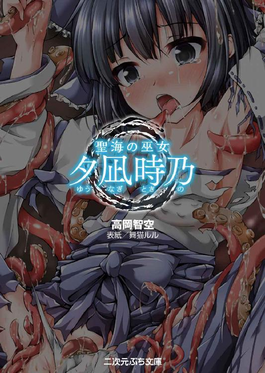
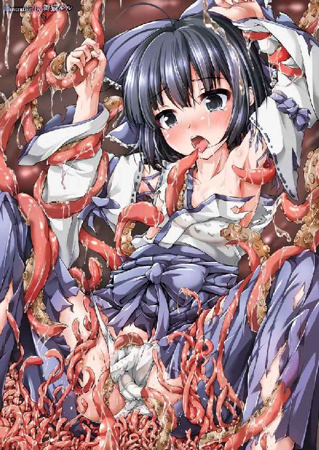

| 聖海の巫女 夕凪時乃 (二次元ぷち文庫) | |
| 高岡智空 | |
| (2016) | |

当ファイルは、モバイル二次元ドリーム『聖海の巫女 夕凪時乃』に基づいて作成しております。
※本作品の全部あるいは一部を無断で複製・転載・配信・送信したり、ホームページ上に転載することを禁止します。本作品の内容を無断で改変、改ざん等行うことも禁止します。また、有償・無償にかかわらず本作品を第三者に譲渡することはできません。
※本作品は電子書籍配信用に再編集しております。
海神の住まう海を見守る、蒼灘神社の巫女。黒髪で少女らしい容姿。
青く澄み、遠く広がり、どこまでも光り輝く、鏡面のような水面──。
古来その島──ミブチ島から望める景観は、海神の治める領域としていかなる人間の立ち入りも許さず、ただ自然のままにその姿を残していた。
地元の人間は言うに及ばず、余所者であっても余程の不心得者でなければ、その海域に足を踏み入れたりはしない。
神の領域を侵す者には神罰が下る──と。
そんな言い伝えが残り、なによりも不心得者が辿った結末を目の当たりにしたことで、海神に対する畏敬の念を絶やさなかったからだ。それはこの島において、科学の発達した現代になっても変わらない信仰である。
「──本当に、美しい......」
そうして今日も変わらぬ海の姿を見つめ、少女は自然と感嘆の言葉をもらす。
一人の人間にとっては広大な海をなんなく治め、その恵みを人々に分け与えてくださる神への感謝と崇拝が、その言葉を紡がせたのだ。そしてそんな神に仕えることのできる自分は、なによりも幸せだと実感している。
そう──彼女は神に仕え、この海を守ることを人の身で許された、蒼灘神社の当代巫女だった。
「和津御様、本日もどうかこの夕凪時乃にご加護を......神域を守る許しを、お与えくださいませ」
畏れ多さに声を震わせながら神の名を、それに続けて神に捧げた己の名を口にし、少女は襦袢の上から清水を浴びた。
「っっ......ぁ......んっ......」
パシャンッ、と水の跳ねる音が石畳に響く。初夏とはいえ早朝の気候は涼しく、冷たく濡れた薄着物の感触に、少しだけ身震いしてしまう。けれどこれは、一日の神事を始めるにあたって外せない習わしであり、身を清めるための禊なのだ。十数年、冬でも欠かさず行い、いまは亡き父に身体を心配されてもやめなかった行為だけに、もうその冷たさにもすっかり慣れている。
これは、そう──ただ反射的に身体が震えただけだ。
（......これではいけませんね、神に対して言い訳をするなど......）
自身を戒めつつ、乾いた布を襦袢に宛がい、水気を吸い取る。
ぴったりと肌に吸いつく薄絹の下、透けて見える肌は陶磁器のように白く、そしてその肢体はみっともない贅肉など僅かにもついていない、華奢な細躯だった。
この現代において、時乃ほどの年齢であればもう少し身長もあり、手足も長くしなやかで、大人の男性がついつい色香に迷ってしまうほどに成熟していることさえある。だが、時乃の身体はその平均値を大きく下回っているのは明らかだった。
抱くと手折れてしまいそうな細い腰と薄い胸板、それに相応しい低身長。そしてなにより、神聖な清らかささえ覚える、謙虚な膨らみを湛えた慎ましい乳房は、年齢をいくつも下に見られるほどに幼さを感じさせていた。
（......これですから、土地の方々にも威厳を感じていただけないのでしょうか......）
ここ数年、そう悩み続けている時乃だが、彼女が幼く見られてしまうのは身体の成長ばかりが原因ではない。
丸く大きく、けれど漆黒の宝玉のようにキラキラと淡い光を放つ瞳も、細い花びらを置いただけのような可憐な唇も、やや丸みを帯びた可愛らしい輪郭の線も。それらの作りだす童顔もまた、時乃の若々しい印象を強くしてしまっていた。
肩口で切り揃え、前髪は眉の辺りで整えた髪型も原因の一つである。とはいえ、長く伸ばした髪が参道や神殿に落ち、それに気づかぬことがあれば祀る神の威光をも傷つけてしまいかねない。そんな心配から時乃は、少し伸びれば髪を手入れし、この童のような髪型をもう数年も守っているのだ。
ただそのかいあってか、この国に住まう者特有の美しい黒髪は、根元から先端に至るまで見事に艶を保つことができていた。陽光を浴びれば反射する光が頭の鉢で冠を作り、その辺りなどは彼女の神聖さを高める要因となっている。
「いいえ、ないものねだりをしたとて、どうにもなりませんし......」
それでも、やはり得られるものなら欲しかったとため息をもらしつつ、ある程度の水気を吸い取った襦袢を脱ぐため社務所の奥、浴場のほうへ向かう。
脱衣所には当然、鏡がある。意図したわけではないが、その前で襦袢をはだけると、やはりコンプレックスである幼い肢体が映しだされた。本当に幼い、ともすれば上がったばかりの中学生と間違われかねないような体型だ。
自分の片手でも包んでしまえそうな乳房は、色素の薄い肌の膨らみに、ほんのり色づいた薄い桜色の乳首がチョンと乗せられている。クルリと身体を回すと、たしかに括れた腰ではあるが、やはり子供のようで頼りなく思えてしまう。濡れた襦袢に透けたヒップは、ツンと布地を押し上げる形の良さではあるが、全体的にボリュームに乏しく、将来は子を産むという役目を考えると、いささか不安に感じられた。
ただ──肌のハリに関して言えば年上の女性はもちろん、手入れを疎かにする同年代よりは遥かに瑞々しく、艶も弾力も最上級であるのは間違いないのだが、比べたこともない時乃にそのようなことを知る術はない。理想と異なる体型に憂いのため息を吐いて、仕事着である巫女装束に着替えることしかできなかった。
◇
巫女の一日は早く、長く、そして多忙だ。
先ほどの早朝起床からの禊、そして清潔な衣装に着替えて神殿の清掃、参道の掃除、その他の雑務などを執り行う。しかしこの蒼灘神社においてはもう一つ重要な神事──すなわち、神に代わって海を見守るという大事な役目があった。
もちろん、見守るといっても、ただ黙って眺めていればいいというわけではない。
「......このようなゴミが、いったいどこから流れ着くのでしょうか......」
海辺を歩き、ゴミ袋と火バサミを手にして、浜に流れ着いたゴミを拾い集めてゆく。ここから見える海は船での立ち入りは禁止、さらに海水浴も禁止なのだから、浜辺には一切のゴミが発生しない。けれどどこかから海に落ちたゴミは潮の流れに逆らえず、こうして漂着してくることが多かった。
そのほとんどは袋や缶、それにビンなどの食料品関係のゴミであり、中には油の付着していたものも存在する。それらの油が海に浮かんでいるのを見ると、たまらなく不快に、そして悲しくなるのだ。
（申し訳ありません、和津御様......御身の化身ともいえる海を穢してしまい......）
目に見える範囲の汚れは、なんとか海水ごと掬って引き上げることもできるが、たとえ巫女であっても儀式を済ませなければ海に入れないのだ。手の届かないところで、時乃を嘲笑うように汚れが浮かんでいるのを見ると、小さな手が怒りにキュッと結ばれた。
「ふぅ......ともかく、いったんこのゴミを捨てに戻りましょう。それから、海の汚れをもう一度清めなければなりませんし......あら？」
いわゆる女袴ではない、脚の分かれた袴を膝元までまくり、袖口の広がった白衣を襷で留めた、清掃スタイルで軽く伸びをした──そのときだった。
「あれは......っっ！ なんという、不心得な......不遜な行いを！」
沖のほうで煌めきながら、高速で移動する船を見つけて時乃は瞳をツリ上げる。
本土から島へ物資を運ぶ際は、極力海を汚さぬよう手漕ぎの舟で、そして定められた範囲だけを通過してここへ着くことになる。しかしいま沖を横切っている船は、間違いなく神域を犯して航行していた。
しかもよく見れば船の外縁には網がかかっており、その袋部分は海中に沈みこんでいる。手順や航法、なにより取る量にも気を遣う底引きなどの漁法とは異なった、悪辣なやり口──あれはただの密漁だ。
「ここ半年ほどは、見かけませんでしたが......やはり本土の方は、理解してくださらないようですね。自然を清く美しく保ち、神へ感謝を捧げるという信仰の意味を」
フルフルと怒りのあまり肩が震える。緩んだ手から火バサミとゴミ袋が落ちるのも気に留めず、時乃は装束の袂に手を差し込むと、肌身離さず携帯する巾着を取りだした。
「和津御様......どうぞ愚かなる無法者へ、神罰をお与えくださいませ──」
そこから白い丸薬のような粒を摘みだすと、躊躇いもなく口に運ぶ。
丸薬の正体はこの海で作られる塩、それを球状に固めて神殿に供え、毎朝毎夜の祈りにて神の祝福を賜ったものだ。それを口にし、蒼灘の巫女や神主は神の依代となって、様々な奇跡を体現することができる──その力があってこそ、この島の人々から海の管理者として認められ、尊敬と支持を受けることになるのだ。
「んっ......っ......ふぁ......んぅっ......」
完全な塩辛さではなく、僅かな甘みのある塩味が舌の上に広がり、身体の内側にドクドクと血流の激しさが満ちてゆく。肌を撫でる潮風の感触が絡みつくように感じられ、視界に映る景観がより遠くまで、くっきりと認識できるようになる。さらに耳から響くのは彼方で打ち寄せる波音──それに混じっての不快なモーター音と、荒々しい口調の男たちの言葉だった。
『ははははっ、見ろよ、お前らぁっ！ こいつぁ大漁だぜ！』
『おぉっ、確かに......さっすがカシラが目ぇつけた漁場でさぁ！』
『あの島の管理だとか、神様のモンだとか......ジジイ連中がこぞって止めたのは、こいつを取られたくなかっただけですかねぇ？』
神の依代となり、五感の鋭さが大幅に増したことで聞こえたその会話から、彼らの目的も悪意も疑いようはなかった。
「──と、なれば......もはや遠慮も同情も、必要はありませんね......」
彼らが航路を誤ってこの沖に迷い込んだ、あるいは誰かに唆されたり騙されたりして漁を行ったのであれば、穏便に済ませることも考慮した。和津御様はなにも、無益な暴力を好む神ではないのだから。
しかし彼らは故意に神の膝元を侵そうとしている、それならば自業自得というもの。
「我らが母なる海、その父であらせられる和津御神......御心によりて、彼の者どもを清め給え......洗い給え......赦し給え......」
そう時乃がささやき始めた瞬間、風が凪いだ。いや、凪いだように感じられた。
しかしその直後、地から天に向けて逆巻くような風の渦が吹き起こり、海岸の砂石や青く澄んだ海水を巻き上げてゆく。無論、時乃を襲うような風ではない。風の源は海面、海流の影響もないのに海中で水が螺旋を描き、ゴウゴウと音を立てて大渦を作っているのだ。それが海上の空気をも回転させ、大渦と竜巻が一本の巨大な螺旋となり、グングンと風速を上げて沖のほうへ向かってゆく。
『お......おっ、おあぁぁぁっっ！ カシラぁっ！ 変な竜巻がっ......』
『んだとっ!? うぉぉっ、こっちに来る！ 船をだせっ、取舵だ！』
『へ、へいっ！ っっ......だめでさ！ 舵が利きゃしません！』
泡を食った男たちの声が聞こえ、それらが情けない叫び声に変わる。神の力を降ろしたことで、心も身体も高揚感に満ちている時乃は、男たちのだらしない声を聞き、うろたえるその姿を千里眼で見据え、クスリと唇に酷薄な笑みを浮かべた。
「フフ......無駄ですよ、愚かな密漁者さん......さぁ、存分に足掻いてくださいな」
──普段の時乃はもっと温かな微笑みを見せ、もっと穏やかな口調で話す。周囲を気遣い、子供や老人を大切にする心優しい少女だ。
だがこうして、神の力を宿す塩を取り込むことでその一端を身に宿し、神の心と感情を投影することになる。蒼灘神社に伝わる、一種の降神術のようなものだ。
その際、神罰を下そうと荒ぶる神の心に触れるせいで、無様に逃げ惑う者を前にすると、どうしようもなく愉快になり、嗜虐欲が満たされで全身がゾクゾクと震えてしまう。これは時乃の本心ではなく、神の声を代弁しているようなものなのである。
「その足掻きこそ、神への贖罪となるのですから！」
祓串を持っていない腕を振り上げ、見えない棒を振るって先端を突きつけるように、動かぬ密漁船を指し示す。大渦が船を飲み込み、竜巻が人を巻き上げ、暴風の音が男たちの悲鳴をかき消してゆく。それでも、聴覚の冴えた時乃の耳には、渦の中でもがき叫び続ける情けない声が、絶えることなく響いていた。
「っっ......ふふっ、うふふふふっ......あはははははっっっ！」
完全に悦に入っている──蕩けた瞳で唇を曲げて、傍から目撃すれば土下座して命乞いしたくなるような甲高い笑い声を響かせる時乃。見えない棒の先端を回転させるように、船を指した手先をクルクルと回している姿はまるで、その手で渦を操っているかと思わせるものだった。
◇
「......はぁ、いけません......和津御様のお力をお借りしているといいますのに、あのような醜態を晒してしまうなんて......」
酩酊し、それがようやく治まったような倦怠感と軽い目眩を覚えつつ、頭を振ってそれらを払い落す。それから時乃は、浜辺から別の海岸へ向かう道を歩いていた。
しばらくすると岩壁に囲まれ、大岩で足場を作る周囲からは死角となった海岸へと辿り着く。それは先ほどの大渦──海流と風が行き着く先だった。当然のように、岩場には打ち上げられたように倒れる男たちの姿と、見るも無残な状態になった船がある。
「うっ......うぐ、うぅぅ......いったい、なにが......」
「あら、お目覚めになられましたか？ さほど外傷もないようで、安心いたしました」
一人の男、声音からしてカシラと呼ばれていた男たちのリーダーが、呻きながら身を起こす。時乃の声に反応してこちらを仰ぎ見、驚いたように目を開く。
「女......？ いったい、ここは......」
「あなた方の荒らしていた海の管理者、ミブチ島の蒼灘神社にて主を務めております、夕凪時乃と申します。和津御様の巫女として、先の行為への贖罪を求めに参りました」
「管理......神社、だと？ ってことはここが......へへ、こいつはツイてるぜ」
時乃が粛々と応えた言葉にニヤリと笑い、男は周囲の手下を蹴りつけて気つけする。
「おらっ、いつまで寝とぼけてやがる、さっさと起きろ！」
「っっ......なんと乱暴なことをっ」
あまりの行為に声を荒らげるが、男に気にしたそぶりはなかった。そして痛みに目を覚ました男たちも、ゆっくりと身体を起こし、リーダーに問いを投げかける。
「おかしら、いったいここは......」
「あの海の管理人の島だとよ。へへ、しかもおあつらえ向きに、偉そうなお嬢ちゃんまで出張ってきやがった......ってなわけだぜ、お嬢ちゃん」
振り向きざまに男は懐からナイフを引き抜き、その小さな刃先を時乃に向けた。
「悪いがなぁ、まずはこのおしゃかになった船の代わりを用意してもらおうか」
「まぁ......これは少々、驚きました」
あんな目に遭ってなお、これだけの意気があるということに驚いただけなのだが、相手の男はこちらの言葉を勘違いしたらしい。怯えたように見えたか、それとも相手の意図を理解していないように見えたのか、ともかく男はギラつくナイフを手にゆっくりと歩み寄り、ドスの効いた声を響かせる。
「おい、こいつぁ脅しじゃねぇぞ？ あとは、あの海で漁をする許可をもらいてぇ......ついでに、妙な竜巻に遭わねぇ航路も教えてもらおうかね」
どう考えてもメインは後者のほうだろう。この男たちなら、許可がなくとも勝手に密漁しにくるのだ。時乃はそんな男の態度に辟易としながらも、なによりお腹の底から滾る黒い怒りに、眼差しを冷たくする。
（愚かなっ......神罰をその身に味わいながら、なぜ悔い改めようとしないのですっ）
睨みつけるのではない、ただ侮蔑の感情を乗せて、細めた瞳で彼らを順に見つめてゆく。まだ状況をわかりかねながらも、けれどリーダーの言葉に金の臭いを嗅ぎつけてか、欲に目の眩んだ笑みを浮かべてにじり寄る数人の男──そして最後に、ナイフという武器を手にして気の大きくなった熊のような男を睨む。剛毛のヒゲを蓄え、黄ばんだ歯を剥きだしにした、なんとも醜悪な男だ。
もちろん、人を顔で判断するつもりなどない。どんな顔であれ、心の清い人間は目を見ればわかるものだ。だがこの男に限っては、心の醜さが顔に表れていると感じた。
（......いいでしょう、ならば理解できるまで何度でも味わっていただきます）
「ほぉう......お嬢ちゃん、抵抗するってのかよ」
草鞋を履いた足を肩幅に開き、軽く前傾姿勢になった巫女の姿に、熊男が声に苛立ちを乗せる。
「だが利口たぁ言えねぇな......こっちには武器もある。それに人数も上、しかも全員男だ。痛い目見ねぇうちに、言われた通りにしたらどうかねぇ？」
ゲラゲラと笑い声が上がるが、それを一笑に付し、時乃は冷たく告げた。
「──おっしゃりたいことはそのくらいでしょうか、下衆な方々？ それではそろそろ、贖罪をしていただきたいのですが」
「ふんっ、可愛げのねぇガキだ......やっちまえっっ！」
見た目通り短気な男で、それに単純な考えをしているらしい。
先ほど自ら口にした利点を活用するらしく、腕力に物を言わせようとする男たちが、一斉に飛びかかってくる。不安定な足場も気にせぬ意外にも身軽な動きに、時乃も思わずピクッと眉根を跳ねさせて動揺を見せてしまう。だが──。
（それでも、遅すぎますね......これにて仕舞いです）
ヒュッと微かに空を切る音とともに、男たちの視界からは、少女の姿が消えたように見えたことだろう。
実際には違う、少し身を低くして、一人の男の腕──いや、脇の下に潜り込んだだけだ。それで立ち止まることもなく、時乃は両手を地面スレスレの位置に滑らせ、さらには片脚をも水平に回転させると、たちまち三人の男の足をなぎ払う。
「ぐぉっっ!?」「っつぁっっ！」「な、なんだっ、うわ！」
頓狂な声を、あるいは呻きの声を響かせて、三人の男がバランスを崩して倒れ込みそうになる。しかしその程度で済ませては、すぐに立ち上がって反撃に転じてくるはずだ。
（申し訳ありま──いえ、自業自得でしたね。それでは遠慮なく、気絶していただくとしましょうか......）
なぎ払った足を今度は垂直に跳ね上げる。バランスを失った身体ではその揚力を押し返すこともできず、制御もできず浮かび上がった足は身体を仰向けにし、さらに後方へ倒れ込むよう肉体を操作する。そうせざるを得ないよう、時乃が仕向けたのだ。
「それでは、お休みなさいませ」
「なっっ......ごふぅぅっ!?」
一人の男は、それでもなんとか踏み止まろうとできたバランスのよさのせいで、勝手に横転し、岩に頭を打ちつけて気を失ってしまった。これ幸いにと、残る二人の上向いたあごを小さな手で掴み、トンッと岩場を蹴って飛び上がった巫女少女は、全体重を彼らの顔面に乗せる。
──ガッッ......ゴスゥゥゥゥッッッ！
「っっ......」「ぅ......ぁ......」
手加減をしなければ死んでいただろうが、かろうじて息は残している。しかしこれでは、目が覚めても半月ほどは動けないことだろう。それだけのダメージを与えたのだ。
（さて、残るは......これまたお三人ですか......）
舞でも魅せているかのようにフワリと着地した時乃は、軽く地を蹴って跳ね、瞬く間に彼らから距離を取る。その動作を、そして直前の動きに思わず見惚れていた男たちはようやく我に返り、そして血相を変えて声を震わせる。
「な、なんだ、このガキ......いま......」
「き、消えやがったぞ！ バケモンだぁっ！」
「落ち着けアホンダラァッ！ こいつらが油断しただけだろうが！」
そう怒鳴る熊男だが、明らかに彼にも動揺が溢れている。
（......これは面白い、少しからかって差し上げましょうか）
フフフ、と愉快そうな笑みに唇を歪め、トントンと草鞋のつま先で岩場を叩く。
その日の気候、その日までの岩場の様子から、足場がどのような状態かなど見なくても察することができる。この十数年、毎日のようにこの浜を、海を、岩場を見てきたのだ。その場所で歩くことや走ることはおろか、飛んだり跳ねたりはもちろん、舞うことだって容易だ。お茶を点てることさえ造作もない。
そんな場所で、気絶から復帰したばかりの男たちを叩き伏せることなど──同じく十数年間、神の尖兵となれるよう修練を積み続けた巫女にとっては、袋の中のモノを取りだすことよりも容易い。
「バケモノですか......そうですね、あながち間違ってはおりません。さて、お三方はどのような末路をお望みですか？ 気絶、窒息......それとも呪いがお気に召しましょうか」
「の、のろっ......」
クスクスと嬉しそうに笑ってやると、それだけでゾッとしたように顔を青ざめさせる二人の男。だがリーダーはそれでも虚勢を張り、声を荒らげる。
「ふざけたことぬかすんじゃねぇ！ なにが呪いだっ......おいっ、こんなガキ掴まえちまえばどうってこたねぇ！ それに結構な上ダマじゃねぇか......このまま連れて帰って、外国にでも売り払ってやろうじゃねぇか！」
「あらまぁ......ふふふ、怖いことをおっしゃいますこと......ですが......」
そんな男の最後の強気を剥ぎ取ろうと、時乃は手の平を海の方向へ向けて見せた。
「あまりに無法が過ぎるようでしたら、先ほどのように──」
その瞬間、目の眩むような突風が岩場に挟まれた谷間、この海岸に吹き荒れる。同時に海が荒れ、ザザザザァァッと海面が靡き、水飛沫が男たちの頭にまで跳ね上がった。
「な、なんだ、いきなりっっ......」
「この、風......ま、まさかぁ......」
カランッと男の手からナイフが滑り落ちる。このくらいの時間になると必ず起こる、ただの自然現象であるこの突風を、時乃が起こしたとでも勘違いしているようだ。
「荒ぶる風と海に呑まれることになりましょう......末路はもちろん、こちら──」
岩場に乗り上げ、見るも無残な無機物を指差す。船体には穴が空き放題、水没して海藻が絡みつき、水浸しになったそれは、溺死体のような様相を示していた。
「──さて、いかがなさいましょうか？」
もはや言葉も出なくなった男たちは、慌てて岩場に土下座し、時乃に詫びを申し立てるしかなくなったのだった。
◇
「......本当にいけませんね、これでは......まだ神のお力が、お帰りになっていなかったのでしょうか......あぁいえ、これはなにも和津御様に不平を申したわけではなく......」
こうして、ついついひとり言が多くなってしまうのは、一人暮らしとなってしまった生活のせいなのか。
船に搭載されていたゴムボート一艘で彼らを追い返し、船と積み荷を接収した時乃は、ようやくその整理を終えたところだった。網に捕らえられていた高級魚、それに貴重な貝類や海老などの海の幸をすべて放し、海への侵害行為について、地元民の有力者を集めて神社でのご祈祷を済ませる。それからいまは、船の分解と積み荷の運搬を任せ、元の浜を神社に向かっているところだ。
「早朝のものだけでは足りないのでしょうか......であれば、これからもう一度禊をしまして......そう、精神修練も倍に増やしませんと。ええ、それから──あら？」
ともかくそうして、男たちの前で見せたトランス状態時に近い姿を反省していると、不意にピタリと風が止まった。
「......妙な感じですね。凪の時刻は、まだ少し先のはずですが......」
逢魔が刻──そんな言葉が頭を過るが、空にはまだ明るく日が照っている。お昼を過ぎたばかりのこの時間に、妖の類が出るとは思えなかった。と──。
『......ま......きの、さま......』
「はて......どこからか、わたくしを呼んでいるような......」
風が止まったことで、次第にはっきりと声が聞こえてくる。事後処理を頼んだ地元の者かと思い、周囲を見回すが、おかしなことに辺りには誰もいない。
（変ですね、ただの気のせいでしょうか......いえ、ですが......）
そう思っても、やはり微かな声が届き、気になって仕方がなかった。そうして耳を澄ませて声に集中していると、時乃は妙なことに気がつき、目を丸くする。
「そんなっ......声が、海のほうから......？」
だがたしかに、足を海のほうへ向けると、その声がはっきりと耳に届いていた。海にまつわる怪異はいくつか存在するが、過去に経験したそれらとは、気配が少し異なる。そのため時乃は恐ろしさではなく、むしろ興味を惹かれてそちらへ歩みを進める。
「何事でしょうか......まさか、島の子が溺れているということもないでしょうに」
海岸に辿り着き、海に目を凝らすが人の姿などはない。けれどやはり声は聞こえる。
（......いえ、もう少し近づいてみましょう......きっと、どこかに声の主が......）
そうすると、海岸に近づいたことで相手からもこちらの姿が見えたのだろうか。
『時乃様、こちらでございます、時乃様っ......』
「っっ......はっきりと、声が......こちらから......」
そちらに視線を向け、じっと水面を見つめる。そこでは声が聞こえると同時に水がパシャンと跳ね、なにかが水中から飛びだしているようだった。
「なんとっ......まさか、あれが──」
用心深く、けれど大胆に歩みを進めると、その正体はすぐに明らかとなった。
「もしや......あなたが、その......そこな、えぇと......鯛......でしょうか？」
『おお、お気づきになられましたか。さすがは夕凪時乃様、素晴らしい感覚をお持ちのようでございますね』
海辺のギリギリまで上がってくる鯛などがいれば、イヤでもその不自然さに気づくものだろう。とはいえ、まさか魚が人間の言葉を話すなどとは思いもよらなかった。
（さすがは、和津御様の海......この神聖さが、言うなれば和津御様の子らである魚にも、そのお力を分け与えたということでしょうか......）
感嘆しつつ、けれど人語を解する相手とあれば、真摯に対応せねばなるまいと、時乃は真剣な表情になって居住まいを正す。
「ご存知のようではありますが......ええ、わたくしが夕凪時乃に相違ございません。それで、あなた......えぇと、鯛殿は、いったい......」
『これは申し遅れました。私はこの島と海をお治めの主様より遣わされました、使者でございまして......名は人の言葉では言い表せぬので、タイとお呼び下さって構いません。ともかく、このたびは主様よりのお言葉を伝えに──』
「ちょっ......ちょ、ちょっとお待ちくださいませ。いま、海をお治めの主様と......」
聞き違えたかと思ってそう問い返すと、頷くように海中の鯛がチャプンと水面を波打たせ、水の中で身体を捻って応えた。
『はい、この海の支配者である王より......時乃様を宮殿に招待せよと、仰せつかったのです。これまでこの島と海を守ってきたこと、それに......先ほども、我々の仲間をお助けくださったことにも、礼を尽くさねばならぬと仰せでして』
ぜひいらしてください、と鯛がもう一度、水中で宙返りを見せていた。
「な、なんと......わたくしのような者を、神が......和津御様が、お召しに......」
ジンと心が熱く震え、感動のあまり言葉もない。
心より信じ、尊敬し、身も心も尽くさんと考えていた相手が、海の底よりわざわざ使者を送ってくださるなど、身に余るほどの光栄だった。それも言葉を伝えるだけでなく、神宮に招かれたとは、亡くなった父母が聞けばどれほど喜んでくれることか。
そもそも和津御様は遥かな古代、このミブチ島に魔性の手を伸ばした悪しき邪神と数十年に及ぶ戦いを繰り広げ、ついにそれを打ち破った戦神だとされている。そして島と海を守らせるために人々を配し、それを見守っているのだと。その際に人々のリーダーとして神託を受けたのが、初代の夕凪家当主だったそうだ。
（あぁ......父上、母上......蒼灘のお役目、やはり神は見守っておられたのです......）
これまで時乃が巫女として務めた分だけではない。すでに数百年にも及ぶ歴史の間、この海を見守ってきた夕凪家の先祖代々が、役目を立派に果たしたことを神に認められたという意味だ。
（和津御様、ありがたき幸せでございます......この夕凪時乃、死して海に還るそのときまで......いえ、死して後も永遠に......海の守り手となりとうございます......）
瞳にこんもりと涙が浮かび、ツゥッ......と頬を伝い落ちて、海に溶け込んだ。
（ですが......いまのわたくしは、まだまだ未熟者で......いましばらくの精進を、お許しくださいませ......）
神から常に見守られていたということは、先ほどまでの醜態もまた、神に見られていたということだ。そんな神の顔に泥を塗るような失態を犯す自分は、よりいっそうの研鑚を積んで自己を磨かなければならないと猛省する。
「大変申し訳ございません、鯛殿。お招きの言、ありがたく賜りましたが......この度ばかりは、辞退させてくださいませ。わたくしはまだ修行の身ゆえ、もうしばらく精神を成熟させた後に、まだ神がお認めくださるのなら──そのときこそ、喜んで神宮に参らせていただきましょう」
鯛に向き直ってその旨を伝えると、時乃は深々と頭を垂れた。だがそれを聞いた鯛は慌てたように海中でグルグルと泳ぎながら、それでも穏やかな口調のまま返してくる。
『......いえいえ、そのような遠慮は不要でございます。我ら海の住民一同も、王の言葉にいたく共感し、ぜひ貴女様をお招きしたいと思っているのですから』
「まぁ......本当に、なんと言っていいやら......ですが──」
なおも固辞しようと口を開きかけるも、その言葉を伝えるより早く、鯛が身を躍らせて早口に申し立ててくる。
『なによりも、時乃様に救われた者たちが、直接感謝を伝えたいと申しておるのです。もちろん、彼らは私めと同じようにここまで上がってこようといたしましたが、先ほどの網に捕らえられた影響で、泳いでくるのは至難の業......しかし彼らの意を汲んだ主様が、それならば巫女を招いたらばどうかと、仰せになられた次第で......』
「それは、ですが......いえ、そうですね......」
魚たちの気持ちはもっともだろう、そしてその気持ちを汲んだ和津御様の御心は、まさに下々を思う神の思し召し。もしここで時乃が申し出を固辞し続ければ、それはすなわち、神の威光を傷つけることになる。
（......そうでした。和津御様が直々に招いてくださったということは、神による召喚ということ......わたくしのような者が、それを拒むなどあってはならぬこと......）
軽率に答えたことを反省すると、時乃は砂地にお尻を落として正座し、両手をついて深々と頭を下げた。神からの使者である魚への、詫びと謝辞のつもりだ。
「申し訳ございませんでした、鯛殿......召喚の辞、謹んで頂戴いたします」
『おぉっ！ そう仰っていただけると、こちらも助かります。さてさて、そうと決まればすぐに支度を致しましょう。少々お待ち下さい......』
そういえば──と、そこでようやく時乃は思い至った。魚を使者にしているということは、海神の宮は海底にあるのではないか。そこに向かう方法など考えもしなかったが、すでにあちらでは準備がなされていたらしい。
（しかし、どのようにして......っっ!?）
不思議に思ったその瞬間、海中にいた鯛が急に光り輝きだしたかと思うと、その身が大きく──いや、そもそもの姿形までを歪め、変貌してゆく。
「こ、これは──」
『ご心配なさらず。地上に出ても難儀せぬようにと、主様よりお力を受けてきたのです。人の形を為せるように変化の力を、そしてもう一つはこちら......』
視界が白く塗り潰されるほどの大量の光に目を閉ざすと、不意に目蓋から感じる光の感触が止まった。恐る恐る開くと、すでに光の奔流は治まっており、しかも驚くべきことにそこには美しい女性の姿があった。
「あ、あなたは......まさか、鯛......いえ、タイ殿......？」
『はい、驚かれましたか？ これは申し訳ございません......』
先ほど時乃がしたように、頭を下げて詫びる鯛──いや、その化身である女性。文献で見たことのある天女のような羽衣を纏い、足首まで覆うそれらごと膝まで海中に沈んでいるのだが、人の衣服と違って濡れているという印象がまるでない。それは服だけでなく、身体もそうだった。水中に立ちながら、その周りに薄い空気の膜でも張られているかのように、彼女は水と触れ合っていないのだ。
『さぁ、時乃様もこちらをお召しくださいませ。いま着ておられる装束の上に、羽織るだけでも結構でございますから......人が水の中にても呼吸し、生活することができる羽衣でございますよ。宮殿には空気もありますので、そこまでのご辛抱です』
恭しい仕草で差しだされたそれは、絹でも麻でもない。化学繊維ともまるで違う、見たことのない生地で作られた衣だった。陽を跳ねて美しく輝き、そっと触れてみると吸いつくような柔らかさと滑らかさを持って、指を優しく包んでくる。
「なんと、美しく心地よい感触でしょうか......これを、わたくしが......」
『はい、時乃様のためにと主様がご用意なさったものでございます』
歓喜のあまり、受け取る手が震えてしまう。サイズの大きい襦袢のようで、巫女装束の上から羽織っているのになぜか身体にぴったりと密着し、まるで直接身に着けているのではと錯覚するような、気持ちのよい生地の感触が身体中に伝わっていた。
「ふぁ......んっ、こ、このような絹......いえ、絹ではないのですね。ともかく、これほどに軽く、しかも柔らかくて動きやすい服など、見たこともございません」
『これはこれは、よくお似合いですよ、時乃様』
クルッと身体を回してみるが、口にしたように軽やかさが違う。それまで着ていた装束の重量も感じさせない、まるで羽でも生えたような身軽さだった。
しかも見た目こそ襦袢に近いのに、普通のそれよりもはっきりとした白色のせいか、なにやら衣装全体が輝いているようにも見える。和津御様の神聖な力が及んでいるのかと思うと、着ているだけで力が湧いてくるようだった。
『それではさっそく、参りましょう......恐れずとも、呼吸の心配はありませんので。どうぞ気を楽になさって、私に掴まってくださいませ』
「は、はぁ......それでは失礼を──きゃぁっ!?」
差し伸ばされた手をおずおずと掴み、手をつないだ瞬間、女性に引っ張られる。小柄な時乃を抱えた鯛の化身は、踏んでいた砂地を蹴って、頭から水の中に飛び込んでいった。
「あああああ、あのっ、わたくしっ......ひっ、きゃっ......ま、まだ心の準備がっ」
『落ち着いてくださいませ、そしてご安心を......さぁ、いかがでしょうか？ 言葉も話せますし、呼吸も問題はないようですが。あぁ、目を開けられても平気ですよ』
ギュゥッと固く閉じた瞳に、水の感触はない。それどころか全身にも、濡れた感触ではなく、まるで宙を舞っているような風を切る感触が伝わってきた。
「っっ......で、では......っっ......な、こ、これは......」
透き通るような、美しい蒼に埋め尽くされた海中には、色とりどりの魚が泳ぎ、サンゴや海藻が景観を飾る、この世のものとは思えぬ光景が広がっていた。
（なんと、美しい......）
周囲の魚たちは、時乃たちの姿を見つけるとすぐに集まり、会釈するように小さな身を波打たせ、案内するように並んで泳いでくる。
そうして陽光も届かぬ海底深くに近づくと、周囲の光景はより暗く、より幻想的になってゆく。そこまでの深度でない辺りでは、クラゲが仄かな光を発し、まるで夏の星空のようだった。さらに深くに潜ると、今度は驚くべきことに海底から光が溢れているのが見えてくる。
「タイ殿、あの光はいったい......？」
『ええ、あれこそが海底宮──我らが主様のおられる、宮殿にございます』
暗い夜闇のような水中から、青白く輝く光の中に飛び込む。奥に見えた、その宮殿の外装を見て時乃は息を呑み、感嘆する。岩やサンゴで作られた、頑丈かつ豪奢なその宮殿はまるで城のようだった。
入口には大きな城門が置かれ、周囲を警護する魚介類に化身たち。城門の内側にも住民はいるらしく、普通の魚もいれば鯛のように人になったもの、そして半魚半人といった姿のものなど、その見た目は多種多様である。
（これが、和津御様の神宮......はぁ、本当に夢でも見ているような光景ですね......）
とはいえ、すでに鯛の化身を見ており、彼女から話を聞いている手前、その異様さに驚いたりはしなかった。むしろ魚と人とが共生しているようにも見えるその光景は、自然と景観を清く保つミブチ島の未来を思わせ、心に昂ぶるものを感じる。
『こちらが夕凪時乃様でございます。主様の命により、地上よりお連れいたしました』
城門を守っていた──おそらく兵職にあるものなのだろう。魚の化身に鯛が旨を告げると、通ってよいという許可がすぐに下された。彼らに会釈し、鯛の腕に抱かれたままで時乃はいよいよ、神の住まいに足を踏み入れることとなる。
だが、その直後に時乃はようやく自分の状態に気がつき、慌てて鯛に申し出た。
「あ、あのっ、タイ殿......ご存知だとは思いますが、先ほど密漁者を相手にしたことで、少々汗をかいておりまして......できれば、どこかで流したいのですが......」
こんな水の中でそんなことを頼むのは、なにか妙な感覚だった。だが仕方がない、この衣おかげでここまでの道中ではまるで濡れておらず、鯛の言葉にもあったように、城の中もまるで地上のような環境なのだから。だからこそ、時乃も自分の肌が汗ばんで、ベタついているのに気づけたわけだが。
『はて、いったいなにを......あぁ、そうでございました。お人は日々、水浴びや湯浴みという行為で老廃物を洗い流すと、伺った記憶がございます』
「ええ、その通りで......もちろん、日々の習慣は欠かしておりませんが、神にお目通りするのであれば、直前に禊をする必要もございますし......」
そう言いながらも、鯛の返事に不安を感じていた。魚にそういった習慣がないのであれば、どうやって汗を洗えばいいのやら。
しかしその心配は杞憂だったらしく、鯛の化身はニコリを微笑んで巫女に返す。
『心得ました。それでは、すぐに手配をいたしましょう......とはいえ、元々謁見に際しまして、こちらでご用意した儀式もございますゆえ......その過程で、どのみち御身は清められますから、ご安心を』
「そ、そうでしたか......いえ、それならばどちらもお願いいたします」
頷いた鯛の言葉に安堵し、時乃はようやく宮殿の奥へと案内された。と──。
──クキュゥゥゥゥ......
「──っっ!?」
『まぁ......ふふ、そちらのほうは、謁見の後にご用意しておりますので』
「......か、かたじけのう、ございます......うぅっ......」
空腹を訴える最低な醜態を、軽く流してくれた鯛の化身の顔を、時乃は直視することができなかった。
「はぁ......本当に、なんと未熟かつ浅ましいお腹でしょうか......」
案内された部屋に入り、猛省を余儀なくされる。いやまだ、あのタイミングであってよかったと思うべきか、謁見の際に鳴っていたらと思うと背筋が凍る。
（それにしても......広い脱衣場ですね、ここは......）
宮殿内の浴場にあたるのが、この先の部屋だと聞かされている。いまいるのが脱衣場で、浴場には反対側にも扉があり、その先では謁見のために身を清めた者が、なんらかの儀式を行う場所になっているとか。
そのためにもここで、しっかりと身を清めねばならない。受け取った例の衣を脱いでも、呼吸などの問題は感じられなかった。丁寧に畳んで脱衣篭に置くと、次は汗や砂で汚れた巫女装束を、同じように脱いで丁寧に畳む。
白衣を脱ぐと、襦袢越しでもわかる汗の臭いが鼻先をくすぐった。この暑い中で立ち回りを演じたのだから仕方のないこととはいえ、年頃の娘としては、この汗ばんだ状態のままで誰かに抱かれていたことが、いまになって恥ずかしくなってくる。
（タイ殿は、なんとも思われなかったでしょうか......）
袴を脱ぐと、下半身も同じくらいに、蒸れた汗の臭いがこもっていた。自身の生まれたっての体臭のせいで少し甘い、けれどやはりツンと刺激のある汗の臭いに包まれ、どうしようもない羞恥を覚えながら、時乃は汗ばんだ襦袢を肌から引き剥がすようにして、早々に脱ぎ去る。
襟と袖を揃え、大きく形を崩さない程度に畳むと、用意されていた手拭いを広げて身体の前面を隠し、次の部屋への扉を開いた。銭湯のような横開きの戸も意外だったが、その奥を見てさらに驚くことになる。
（......本当に、ちゃんとお湯が張られているのですね。いったい、どうやって......）
十数人は入れそうな、まるで旅館の大浴場を思わせるほどの広さで、その半分を占めている大きな湯船には、なみなみと温かな湯が張られていた。鯛の化身に聞いたところ、魚の状態で入ったりしなければ、この宮殿に住まう魚たちも平気なのだそうだ。しかしこうして、海の中の城なのに風呂があり、湯船まであるところは不思議でしかない。
「なんでも、百年以上も昔に作られたそうですね......その頃にもやはり、わたくしと同じく和津御様に招かれた方がいらしたのでしょうか」
こうして海底に連れられた自分が平気で呼吸もし、会話もできているのだから、いまさらなにを考える必要があるだろう。神の力に畏敬を抱きつつ、湯船の湯を掬って肩から浴びる。細い肩から流れる熱い感触が、汗ばんだ不快な感触を拭い去って、それを背中から腰へ、そして足先へと全身に広げてくれる。
（ふぁぁ......んっ、気持ち、いいですねぇ......それに、この香り......）
なにかの薬湯を使っているのか、鼻腔に溢れる甘い香りに包まれながら、二度三度と湯を浴びる。熱いというほどではない、適度に身体を温めてくれるその感触に快感さえ覚え、つい身震いをし、時乃は洗い場に腰を下ろした。
「えぇと、たしかこちらから......あぅっ、ん......はぁぁ......」
浴槽の一角は、浸かるのとは別になるよう区分けされている。そこから湯を汲んで身体を洗うのだと、聞かされていた。汲んだお湯の、先ほどと変わらぬ温かさにピクンッと腰を震わせ、時乃は手拭いを浸し、お湯で身体を清めてゆく。
さすがに陸と違って石鹸などはないようだが、普通のお湯とは違うのか、ほんの少しだけヌメりを感じるそれのおかげで、洗うことに問題はなかった。
普段、神社の風呂でもそうしているように、まずは髪の汚れを丁寧に拭う。シャンプーなどはないので、濡らした手拭いで髪を拭いていくというやり方だった。
ある程度さっぱりしたところで、今度は首周り、そして腕と、少しずつ身体の低い位置に洗浄を広げてゆく。温かなお湯が絡んでくると、その部分から身体の芯に熱が伝わり、四肢が震えて脱力しそうになる。
（はふっ......うぅん、なにやら、妙な......まるで、神のお力を身に宿したときのように、不思議な昂揚感です......）
さすがは神の住まい、湯の一滴に至るまでその力が及んでいるのかと、感服するばかりだった。
ヌルリ、ヌチュゥゥ......と、音が響く。もしかすると、少しだけお湯の粘度が増したのかもしれないが、それは神の力が濃厚になったということだろう。それを思うと、嫌悪するどころかますます嬉しくなり、何度も湯を掬っては、身体に擦り込むように洗ってしまう。すでに手の先から足の先まで、二往復は洗い流したはずだった。
「ふぅ......んっ、はぁぁ......はぁ、これだけ磨けば、粗相することもありませんか──」
仕上げにもう一度、肩口からお湯を浴びて、子犬のようにブルルッと身を震わせる。跳ねた水滴が張りのある肌の上で、丸い粒になって流れ落ちた。
「──はて？ なにやら音が......あら」
そんな時乃は、浴場の扉の開く音に気を引かれ、そちらに目を向ける。見れば、同じように手拭いで身体を隠した女性が二人、浴場に入ってきたようだ。
（そういえば、公衆浴場のような役目もあるらしいですね......入口で許可をもらえば、誰でも入れるようになっているとか）
まだスペースに余裕はあるが、洗い場を空けようと時乃は腰を上げ、彼女らに会釈して湯船に向かおうとする。と──。
『あぁ、お待ちくださいませ、夕凪時乃様』
「えっ......あの、なにか？」
不意に名を呼ばれ、思わず足を止める。もしやなにか、粗相をしてしまったかと身を竦めるが、どうやらそうではないらしい。
『うふふ、そう緊張なさらないでくださいませ。私たち、時乃様の湯浴みの世話を申しつけられました、カレイと──』
『私は、ヒラメと申します。慣れぬ場所でもありますし、後の儀式のための洗い方もございますから......申し訳ありませんが、いま一度、御身を清めさせていただきますわ』
鯛の化身よりも、少し年上──時乃の倍くらいの年に見える、女性らしい色香に満ちたその二人は、似たような顔つきをしていた。違うところといえば、ヒラメには左の目の下に、カレイには右の目の下に、泣きボクロがついているところだろうか。
「そ、そうですか......では、お世話になりましょうか......」
長い髪をアップにし、細い瞳をニッコリと細めて時乃の腕と腰を取る。背の低い時乃の頭は、ちょうど彼女らの胸元辺りにきていた。手拭いで隠しながらも、圧倒的な膨らみが左右にあるのを感じ、女性としての敗北感を覚えてしまう。
（......タイ殿もそうでしたが、なんなのでしょう......魚の化身は、このように恵まれた体型の方ばかりなのでしょうか......）
肌も真白で、まるで雪のようだ。ただ、よくよく目を近づけると、美しい肌の上にウロコのような模様が見え隠れしている。だが遠目にすれば気にならないのだから、やはり彼女らは相当な美女だと言えるだろう。
『さぁ、お座りくださいませ......お隣、失礼いたしますね』
『身体の力をお抜きになって、どうぞ私たちに身を委ねてくださいませ......ふふ』
「──っっ！」
左右の声から似たような、熱っぽい吐息混じりの声が響き、ゾクゾクッと背中が痺れさせられた。
「......んあっ......ふっ......うぅっ、んっ......」
『あら、どうかなさいましたでしょうか......どうぞ、お気を楽に......』
なにか奇妙な感じを受け、思わず手を振り払いそうになるより早く、女性たちの手が時乃の手の平を柔らかく撫で擦る。左右から手首を優しく握られ、いつの間に汲んでいたのか、お湯を手の平に垂らされ、それを指で塗り込められている感触。
クルクルと軽やかに円を描き、親指下の膨らんだ肌や敏感な中央部分、そして各指の付け根──触れるか触れないかという絶妙のタッチで、二人の化身の指が微かな刺激を送り込んでくる。
「ふぁっ、ふっ......んっ、く、くすぐっ......うぅんっ！」
『えぇ、筋肉をほぐすのも兼ねておりますから......どうぞ、耐えかねましたら、手を振り払ってくだされば伝わりますので』
そうだ、手首を握られているとはいえ、少し力を込めれば簡単に女性たちの指は解けてしまいそうなほど、弱々しく留められているだけだ。
（い、いけません、これは......そう、儀式の準備なのですから......多少、く......くふっ、うぅっ......くすぐったい、くらいで......ぇっ、はっ......あぅっ......んんぅ......）
左右から、肉感的な柔らかい女性の身体が、近づいてくるような気がした。だがはっきりとはわからないまま、再び手の平が撫でられ、指の間に彼女らの指が通される。ヌルりとした、あの心地よいお湯の感触が押しつけられ、座ったままのお尻がヒクッと小さく跳ねてしまった。
『あらぁ、どうされましたか......こ・こ......うふふ、くすぐったいでしょうか......』
「い、えぇ......んぁっ、ふっ......そ、それほど、れ、もぉ......んっく......」
耳のすぐそばで、ヒラメの声が聞こえた。まるで耳朶に唇が触れているのではと思うくらい近く、吐息の感触が熱く伝わってくる。声を震わせてそう答えると、満足げに二人の女性が笑い、腕が引き寄せられた。
「ひふっっ！ あ、あぁ......そこ、は......あぁ......」
『大丈夫ですよ、存じております......お一人で、こちらを洗われるのは大変でしたでしょう？ 念入りに、私たちで洗浄いたしますから......』
肘から先が、とてつもなく柔らかな感触に包まれ、たっぷりのお湯を絡められる。思わず背中がヒクついてしまいような、想像したこともない感触に瞳を細めてしまった。
それが化身たちの乳房だと理解し、気恥ずかしさを覚えるが、彼女らは自分を洗おうとしてくれているのだと言い聞かせ、なすがままに腕の力を抜く。
「んっ、くっ......ふっ、うぅ......ふぁっ！ はぁっ、やっ......あぅっ、うぅ......」
抵抗のない腕は持ち上げられ、両方の腋や脇腹が剥きだしになる。先ほど手の平を撫でられたのと同じ、ねっとりとした指使いが腋に触れた瞬間、たまらず声が上擦ってしまった。
（あふぅぅっ......んっ、くぅ......だ、だめっ、です......ひぅっ、はっ、く、くすぐっ、た......あぅっ、ひはぁっ！）
ヌルヌルとしたお湯が潤滑油となり、多少強く擦られても痛みなどはまるでない。だがその分、腋を撫でられる感触にビクビクと全身が跳ね回っていた。
（だ、めぇ......んっ、あっ......え、そ、そんなっ......）
たまらず腕を抜こうとし、唖然とする。腕は乳房に挟まれ、そして手首から先は女性らの太ももに挟まれ、柔らかな肉と温かくトロトロしたお湯で包まれ、まるで動けなくなっていた。無理に引き抜こうとすればできそうなものだが、両手を固定されているために上手く力が入らず、抵抗が完全に阻害されている。
その隙を突くように、女性らの指──全二十本が好き勝手に動いて、二の腕から腋の下、脇腹から腰、そしてボリュームの少ないプリンッとした小さなお尻にまで、満遍なく摩擦運動が送られていた。玉のような肌、というのがしっくりくるほどツルツルで、張りのある時乃の肌は、女性らの手の動きを押し返しながらも感覚を受け入れ、ヌルッ、チュルゥゥゥ......と、まるで舐められているような感触とともに、くすぐったさを感じる。
「ふぁうぅぅっっっ！ んぁっ、はっ......はひゃっ、してっ......んっ、く、くださいぃ......んっ、わ......わ......き、は......うぅ、く、くすぐった、い、ので......んぁっ！」
『はい？ あぁ、もっとして欲しいのですね？ ふふ、了解いたしました......』
『なにしろ、ここ......腋の下は、もっとも多く汗をかく場所と聞いておりますから......念入りに、時乃様の汚れを洗い取らせていただきましょう』
「んんぅぅっっ!? ひっ、ひがっ......はっ、ひゅんっっ！」
呂律が回らぬほどくすぐったさに堪えたせいで、放してほしいという願いを、まったく逆の言葉に捉えられてしまった。
しかも汗の臭いが濃厚だと、たとえ一般論だとしても、同じ女性に指摘されたことが無性に恥ずかしく、時乃は白い肌を耳まで赤く染め、羞恥に悶える。だがそうして腕を引こうと抵抗しても、固く閉ざされた彼女らの拘束からは抜けられず、指によって腋を擦られる恥辱にひたすら耐えなければならない。
『いかがでしょう、時乃様......ここのお湯は、薬湯であると同時に香湯でもありますので......こうしておけば、いつでもこちらからは芳しい匂いが感じられますわ』
「ふやぁぁぁ......あぅっ、んっ、んひゅっ......ひっ、ぐぅ......うあぁぁ......」
指先に掬われた粘度あるお湯が、小さな生き物でも這っているような感触で、塗り広げられる。脇腹か伝い上がり、窪みをチロチロと舐めながら、二の腕をツゥゥ......と伝い、ガクガクと腰が跳ねる。けれども動くことができず、くすぐったさから逃れる気分さえ味わえず、気が変になるほどの痒甘痛が腕から全身に伝わっていった。
『まぁまぁ、気持ちよさそうにしていらして......では失礼して、こちらも念入りにご奉仕いたしましょうか』
そう言いながら、もう片方の腋も念入りに撫でられるのだが、同時にそちらからは、腰からお尻へヌルつきが広がってゆく。しかもその手の動きが、手拭いで身体を拭くような、撫で擦る感触だけではない。女性の手は動きながら指が微かに曲げられ、時乃の柔肌を表面から、その下のほんのわずかな肉まで揉み捏ねているのだ。
『こちらのお肉が、硬くなっていてはいけませんから......しっかりと揉みほぐしておきますからね、時乃様......』
（あっ、うぅぅ......筋肉を、ほぐしている......の、ですか......そう、でした、ね......）
小さなお尻の片房が、女性の手で鷲掴みにされた。そしてそれはすぐに放され、フニュンッとへこんだ肌が、すぐさま張りを持って元の桃のような形に戻る。
だが、気を抜く間もなく手は位置を変え、強さを変え、お尻の肉を揉みしだく。尻房で円を描かせながら、その奥にある芯をほぐすような手つきで、何度も何度も──柔らかく小さな尻肉を、さらに柔らかくしていった。
「あぁ、んっ......あっ、はぁっ......はぅっ、あぁぁ......んっ、んぅぅっ......」
尻肉をクニュクニュと揉まれるのに混じり、指先が尻谷間を微かになぞり、尾てい骨の辺りをお湯でくすぐってくる。ゾクゾクと背筋が痺れ、力の入らない膝が、勝手にカクカクと揺れて反応してしまう。それが恥ずかしくて押さえようとすると、余計なことはしなくてよいとばかりに腋下が数本の指で撫でくすぐられた。
「はきゅぅぅっっ！ んひっ、はっ......あはぁぁ......はふっ、はぁ......」
それだけで強張った四肢はダラリと垂れ、またも肢体が女性らの両手両腕、両乳房に好きにされてゆく。だが次第にそのくすぐったささえも、お湯と同じように気持ちがいいのだと思えてきてしまい、くすぐったさに合わせて身体を跳ねさせるのに抵抗がなくなってきているのを感じていた。
『いかがですか、時乃様......気持ちようございましょうか？』
「え、えぇ......んぅっ、これは、とて、もぉ......ぉっ、はっ......ひゃぁんっ......」
背中が撫でられ、跳ね上がった瞬間に、身体の前に滑り込んだ手が太ももの内側に触れてきた。あっ、と思ったときにはもう遅く、それまでとはうって変わった力強い動きで、足が左右に開かれてしまう。
「そ、そこは......あぅっ、んっ......くふぅぅ......」
『こちらも、汗の感触が残っておりますわ......こうして、念入りに洗いましょうね』
足の付け根から、手の平全体を使って膝に向けてお湯が引き伸ばされる。ザワザワと奇妙な感覚が、足から下腹部に、そして背筋を這い上がって頭の奥に響いてくるようだった。だがそれでも、まるで抵抗できない身体は女性らの手に翻弄され、左右から太ももを擦られているというのに、ビクビクと腰を躍らせることしかできない。
──ヌルルルゥゥ......クチュッ、チュルゥゥッ......グチュッ、ヌリュゥッ......
「はひゅっ、んっ、ふぁっ......はっ、あぁぁ......こ、これは、まこ、とにぃ......あ、あらっている、だけ、で......」
『ええ、こうして洗うのが人間の身には心地よいと、古来伝え聞いております』
『そして、次の儀式のためにも......ここは奥の奥まで、綺麗にしておかねばなりませんの......さ、力をお抜きになられて......うふふ』
相変わらず、耳朶を打つ熱い吐息に首筋が粟立ってゆく。そうしながら、いつしか腕は彼女らの乳房でニュルニュルと扱かれる。指先、腋への洗浄も手を抜かないでいながら、片手はほぼ常に、太ももと内股を擦って、その指は時乃の大切な部分に掠っていた。
（んぁっ、あぁぁ......い、けませ......ん......はふっ、はっ......そこ、はぁ......）
微かに頭でそう思うのだが、湯気の充満する浴場で茹ってしまったのか、どうしてだめなのか、その考えがまとまってくれない。その間も女性らからのささやきが、ジンと脳髄を痺れさせ、この行為を受け入れろと命じられる。
──これは身体を洗っているのだから、局部に触れるのは仕方がない。
──儀式を行うために、抵抗はしないほうがいい。
（ん......そ、そう、なのです......ね......これは、儀式の、ため......んぁ、はぅぅ......）
細くしなやかな女性の指が、ニュルリとお湯を絡めて、秘唇の縁をなぞっていった。不意の感触に下腹部からビリリッと強い刺激が走り、思わず肩を跳ねさせた瞬間、強く腕を抱き締められる。
「ふはっ......ふやっ、ひゃうぅん......」
温かな感触と柔らかな包み込みが、肌から安心感を与えて、腕が脱力する。すると力の抜けたところで、またも左右から伸びる指が股間を這い、新たなお湯をヌルヌルと擦りつけてきた。
「あぁっ、はぁぁん......んっ、くっ......ふぁっ、ふぁぁ......」
二度、三度と掠るだけの感触だったのに、たまらず時乃は腰を動かしてしまう。だがその瞬間、自分がなにをしたのかに思い至り、慌てて腰を引こうとする。
（んっ......な、なにをしているのです、わたくしはっ......あぅっ、んぅぅっ!?）
けれど──そんな時乃の反応を待っていたように、女たちの指がヌルリと滑り込んで、閉ざされていた秘唇をこじ開けんばかりに強く、指の腹を押しつけてきた。
「くひあぁぁっっ！ はっ、んなっ、なん、で、すっ......うぅっ！ い、いまのっ、は......はぁっ、あぁぁっ！」
戸惑い、そして問いかけるように口を開いても、彼女たちから答えはなかった。ただこちらの反応を見てクスクスと低く笑いながら、彼女らの指はグッグッと肉華を左右に押し開いて、その奥の潤んだ肉襞を、指先で擦り上げる。
「ふぁっ......んぁっ、あっ、だめ、です......うぅっ、そ、そのような、場所......」
『あら、いかがなさいましたか、時乃様』
『お人の身では、この部分は一段と汚れがひどいと聞いておりますので、その分しっかりと磨かせていただきますわ......ほぉら、このようにして......』
風呂桶に汲まれた大量のお湯が、それもさらに粘度の増した掴めるほどに濃厚なお湯が股間に注がれ、二人の手によってグチュグチュと掻き混ぜられる。
（あうぅぅぅっ......い、いや、ですっ......このような、あぁぁ......）
限界まで開脚した脚の奥、他人に秘すべき部分を、よりにもよって神の使いの手で洗われるという恥辱に、顔を覆い隠してしまいたくなる。だがその両手は二人に捉えられ、何度となく擦られた腋と脇腹から伝わる甘痺れによって、完全に力が入らなくなっていた。
──グチュゥゥゥゥゥ......ニチュッ、ズリュッ、グチュッ、クチュゥゥ......
泥遊びでよく聞こえるような、くぐもった水音が股間から響き、開かれた秘部の粘膜がお湯を潤滑油に指で擦られ、這い上がる刺激に腰が跳ねてしまう。
「はふっ......んっ、んぅぅっ......うっ......くあぁぁっ！ あぅっ、ふぅぅっ......」
せめて声は押し殺そうと唇を噛んでも、左右から女性はこちらの顔を覗き込み、その反応を見ながら手の動きを変えているように思えた。そんな馬鹿な、彼女らはただ洗っているだけ──そのはずなのに、時乃が思わず心地よさに眉を跳ねさせ、表情を緩めてしまうと、そうなった原因を狙って、カレイとヒラメの指が蠢いてゆく。
ヌリュリュッと指先が音を奏で、楽器でも操るように淫肉を擦り、あくまでも優しく丁寧に摩擦刺激を送り込んできた。その絶妙な刺激に腰は震えっぱなしで、さらには全身までがその部分と同じくらい敏感にさせられるようだった。
股間だけでなく、お尻を触られ──いや、洗われたり、またも腋を擦られたりするだけで背筋が痺れ、不自由な拘束状態でビクビクと身体中が躍ってしまう。
（あぁっ、あっ......い、やですぅっ......んはっ、はぁぁぁっっ！ こ、これでは、まるで......まる、でぇ......あぁ、わ、わたくしぃ......んくぅっ！）
まだ母が生きていた頃、学校で教わった知識の補完として、そういう行為を教えられたことがあった。蒼灘神社の女として、将来は子を為さねばならない必要性からだ。
だがもちろん、それは知識としてだけで、実践も手ほどきもされてはいない。そんな目にしたこともない行為だが、いま受けている感覚が、そういう行為──いわゆる性行為にて得られる感覚だというのが、時乃は知識と本能で理解できていた。
（っっ......い、いいえ、そのようなっ......神の使いの手で、身を清められているだけなのに......わたくしは、そんなふしだらな女では......っ）
必死に唇を引き締めて、鼻から荒い息を吐いて、込み上げる感覚から意識を遠ざけようとする。だがその耳元に化身の唇が、今度は間違いではなくはっきりと触れて、耳朶を甘く噛み擦りながらささやきかけた。
『はむっ......んっ、いかがなさいましたか、時乃様ぁ......』
「ふぁうぅっっ......んっ、な、なん、でも......あ、ありま、せっ......んぅっ......」
『んふふ、そうですわよね......洗われているだけで、淫らな心地になられたのでは......主様も、落胆なされるでしょうから......』
左右から響く甘い声、その内容にビクンッと肩が跳ねる。そう、このあとで待っているのは和津御様との謁見なのだ。それを前にして、はしたない感情を抱えておくわけにはいかない。
（た......耐え、なさい、時乃っ......このような、ことくらいで......はふっ、ふぁぁ......）
ツルツルと尾てい骨をなぞられ、お尻が揉みしだかれる。それだけではなく、お腹や腕や足や、胸の慎ましい膨らみも撫でるように洗われ、全身が奇妙な感情で張り裂けてしまいそうだった。だが、それでも──。
『──さて、これでお仕舞いですわ。お疲れ様でした、時乃様......さ、お立ちになって』
「はぁ、はぁぁ......はぁっ、え、えぇ......んっ、くぅぅ......んはっ、ふっ......」
息も絶え絶えという様子で全身を震わせながらも、時乃はなんとか冷静な感情を保ち、足腰をガクガクとさせて立ち上がる。
『平気でございますか、時乃様......ふふっ』
「んひっっ──ひぁうぅぅっっ!? んっ、あっ......へ、平気、れふ......うぅっ......」
お尻を支えられた瞬間、目の眩むような刺激に思いきり背中が仰け反る。露骨な反応を見せて羞恥を覚えつつ、なんとか答えた時乃は、彼女らに手を取られて奥の扉へ向かうことになった。
◇
扉を抜けた先は、簡単な着衣場になっていた。濡れた身体を拭くだけでも身体を跳ねさせてしまい、羞恥を味わわされた身に薄い襦袢一枚を羽織らされ、時乃はその先へと歩みを進める。それでも、自分の意思で歩くことはほとんどなく、遣いのカレイとヒラメに手を取られ、肩を抱かれ、背中を押されて歩くことを促されていたが。
『身を清められましたあとは、身支度を整えませんと......さ、時乃様......』
「え、えぇ......んっ、はひゅぅ......」
お風呂で弛緩しすぎたせいか、お尻の肉がいつもより膨らみ、敏感になった気がする。化身の手によって押され、弾力を確かめるようにムニュムニュと揉まれてしまうと、喉奥から溢れるはしたない声をこらえきれなかった。
（はんっ、んぁぁ......わ、わたくし、いったい......どうしてっ......）
スルッ、スルルッと指の腹で尻肉を突かれ、押し込まれながら撫でられ、背中が弾かれたように跳ねる。膝も震えっぱなしで、歩くのさえ満足にできないでいた。
それでもなんとか辿り着いたのは、鏡や寝台、椅子などが並べられた化粧室のような場所だった。さらには別の化身たちも待機しており、恭しく手を取られた時乃は寝台に横たえられ、瞳を閉じさせられた。
「あ、あの、いったいなにを......謁見の身支度を、行うのでは......んっ」
『ええ、その通りです。ですからこの......主様より賜りし、聖水を塗り込めさせていただきますわ。地上で言う、美容液のようなものでもありますから......お風呂上がりに使うとより身体に浸透し、主様の求められる身体になれましょう......』
「そう、なのですか......はぅっ、んぁっ......あ、では......お願い、いたします......」
お試しとばかりに、女性の一人が時乃の手の平にその聖水を垂らし、ヌチャリと音を立てて塗り広げた。ヒヤリとした感触が火照った身体に心地よく、先ほどのお湯に似た感触だったために、深く考えず──いや、考えられず、時乃は了承していた。
だが次の瞬間、それを塗りつける彼女らの動きに、思わず声が上擦ってしまう。
『では、失礼して......んぐっ、んぷぅ......んふふ、ほぇれは、いきまふぅ......』
『じゅるるるっ......んふふ、れぇるっ......じゅる、れりゅぅぅぅ......』
『ぐぷっ、じゅっ......れろぉぉぉっ、じゅろっ、じゅるぅぅぅ......』
「んきひぃぃっっ!? あぃっ、ひっ......ひやっ、な、なにをっ......んやぁぁっ！」
瞳を開いた時乃は仰天した。見れば数人の魚の化身たちは、その聖水とやらを口に含み、唇を身体に押しつけて舌を伸ばし、レロレロと全身を舐め回そうとしているのだ。
「やっ、やめてっ......おやめください！ それにっ、せっかくの聖水をそのようにしては......わ、和津御様の、お力が......っ」
『んふふ、心配はご無用ですわ......私たちの口は人のものと違い、完全な無菌状態......それどころか、いくばくか主様の力を秘めておりますから......』
『こうすることで、さらに聖水が濃縮され、時乃様の御身に染み込みますの......じゅろぉぉぉ......れりゅっ、じゅるるるっ......』
お風呂での数倍はヌルついているであろう、舌と聖水の絡みつく感触が、四肢の先端からその半ば、お腹や胸元へと吸いついてくる。
「んくああぁぁ──っっ！ あうっっ、はっ......い、いけま、せっ......ふぅんっ！」
だが抵抗しようにも全身は女性らの手で押さえつけられ、身を捩ることも叶わない。チュポンッ、ジュルジュルジュル......と唇が吸いつき、粘液を絡められる音が響き、そのドロドロとした感触が肌を撫で、またも全身の感覚が甦ってくる。
（んぁっ、あぁぁ......だ、だめですっ......ふぐっ、んぅぅっ！）
あっという間に舌が足を這い上がり、太ももの内側をチロチロと舌先でねぶってくる。暴れるように脚が跳ね、押さえつけられた腰がいやらしく上下に振れてしまった。そのはしたない動きにカァァッと頬を赤くする時乃の顔を、女性の笑みが見下ろしてくる。
『いかがなさいましたか、時乃様......そのように、だらしのない表情をなさって......』
「ふひぇっ、へっ......んっ、な、なにもぉ......くあぁっ、あぅんっ......はっ、あぁ......」
指摘されて懸命に唇を引き締めたつもりだが、どこまで表情が戻ったかわからない。そうしている間にも、もう身体中が粘液に塗れ、胸元からは痺れるような刺激が迸り、身体を突き抜けてゾクゾクと背中を震えさせてきた。
（んくあぁあっっ！ あぁっ、はっ......んむっ、胸、やっ......いやぁぁっ......）
左右の乳房が女性に舌に撫でられ、思わずヒクヒクと身体を反応させてしまう。目を瞑っていてもわかるくらい、肌の感覚が研ぎ澄まされ、乳房の先端が硬く尖ってゆくのが感じられていた。
『あら、時乃様......もしかして、お寒くございますか？ このように、胸の先を尖らせてしまわれて......んふふ、無礼かもしれませんが、可愛らしゅうございますよ......』
『ですが、寒いのは我慢なさってくださいませ......じきに済みますので』
「はぅぅっっ！ いっ、言わ、なひっ......れぇっ......んやっ、やはぁぁっ！」
梅の蕾のような小さな乳首が、女性の口内に吸い立てられた。途端に伝わるのは、彼女らの口内で温まり、ドロドロに撹拌された粘液の感触──それらが真上から乳首に注がれ、舌の腹で丹念に舐められ、窄まった唇に吸い扱かれてしまう。
「んひぃぃぃ──っっっ!? いひっ、はっ、ふやぁぁっっ！ あぅっ、はぅぅんっ！」
ピンと背中が張りつめ、身体を弓のように仰け反らせながら、時乃は激しく腰を揺さぶって刺激に反応してしまう。もはや否定しようもなく、はっきりと感じられる──それは、快感と呼ばれる刺激だと理解できた。乳房の先端がビリビリと痺れ、重苦しい疼きが肌の上から身体の奥にジュンと沈み込み、下腹部が切なくわなないてくる。
『まぁ、すごいお声......ですが、主様の巫女としては、少々はしたないかと......』
「んひょっ、ひょん、らっ、ことぉっ......ふぁっ、あむぅぅっっ!?」
もっともな指摘を受けて羞恥に顔を染めた瞬間、突然呼吸が困難になった。その原因には、数秒ほどのラグがあってようやく気がつく。唇が、化身の唇で塞がれていた。
（んぅぅぅっ！ んっ、はっ......ひょ、らっ......わたくしの、唇......ぅっ、んっ......）
喉奥にドロリと流れ込む粘液を飲み込まされ、ドクンッと激しく鼓動が高鳴った。急激に思考が薄まり、全身が弛緩して、身体が熱くなってくる。それと同時に、顔にまで熱い粘膜の塊が乗り、ベロベロと粘液を広げてくるのだが、抵抗の意思さえ浮かんでこなかった。
（はふっ、んっ、こ、れはぁ......顔、舐め、られぇ......ひぅっ、んっ、き......きもひ、いぃ......あっ、あぁ......）
二人ほどの女性が顔に口づけを浴びせ、粘液を舌で絡ませてくる。
顔には二人が舌を這わせ、唇は一人の化身に吸われ、舌を挿入されて粘液をたっぷりと注ぎ込まれた。それがなくなれば、すぐまた補充されて唇を塞がれる。
乳房にも二人、お腹には一人。そして左右の腕に二人ずつ、指を一本ずつ丁寧にしゃぶる者と、二の腕を執拗に舐め回す者がいる。足などは三人がかりで、くすぐったさを越える快感の波が指先からもひざ裏からも、そして太ももからも絶え間なく注がれ、時乃の身体はビクビクと淫らな痙攣をし続けていた。
（あぅぅっ、お、おかし、ひっ......んぅっ、おかしく、ないの、れす、か......このような、気持ちのいい......ぎ、儀式、などぉ......おうっ、んっ、ふあぁぁ......）
──ズルニュゥゥゥゥッ、グチュゥ、チュバァ......ジュロロロッ、レリュッ、グチュゥゥ......ニチュッ、ジュルッ、レロォォォ......チュバッ、レリュゥゥ......
もはやそこに、言葉はなかった。粘液を絡める化身たちの舌音、そのくぐもった水音だけが響き、時乃は耳を痛いほどに穿たれる。
（い、あっ......いやぁぁ......このような、こと......本当に、和津御様が......っっ!?）
淫らな音に耳を塞ぎたくなる衝動に駆られた、そのときだった。粘質的な音に混じり、ザリッ......と、聞き慣れない音が混じったかと思うと、股間辺りからチリッと灼けるような鋭い痛みが走った。
「んぐぅっっ！ ぷぁっ、いっ......つ、なん、ですか......なにが......っっ!?」
激しく頭を揺すったおかげで、顔に張りついていた三人分の舌が離れ、下腹部の様子を窺うことができた。だが、その光景に時乃は背筋が凍りつく。
「ひぃぃっ！ い、あ......な、なんなのです、そ......それっ......あぅぅっ！」
抵抗する間もなく、もう一度あの音──なにかを刈り取るような音が響き、股間から肌を強く擦られる痛みが走る。けして肉襞を開いて奥の粘膜に触れるのではない、ただ表面をなぞったはずの刺激が、なぜこんなに痛かったのか。
その理由は、魚の──化身ではない、本物の魚の口だった。
「うぁっ、う、うそっ......やっ、いやぁぁっっ！ なにをしているのですかっ、こ、こんなことっ......おぉっ、くっ、ふぅぅっっ！」
懸命に足をバタつかせようとするが、女たちのさらなる力がこもり、四肢は完全に拘束されている。その隙を狙い、股間に張りついていた数匹の魚が、その口と歯を動かしてザリザリと陰毛を刈り取り、平らげているのだ。
魚は空を泳いでいるのではなく、ただここが水の中というだけのこと。その中を泳いでここに近づき、時乃の陰毛を、鮎が川石の苔を食べるように貪っている。
『あんっ、動かぬようお願いいたします、時乃様......儀式に不要なこちら、淫部の体毛を刈り取るのがこのコたちのお役目ですから......』
『根元から吸い取りますので、少し痛くはあるでしょうけれど......こうしておけば、一生涯......陰毛が生えることはなくなりましょう。よかったですね』
「そ、んな......っっ、やめっ、やめてくださいっっっ！ いやあぁぁぁっっ！」
おぞましい事実を告げられ、背筋が一瞬にして冷え切ってゆく。だが魚たちの口も、そして女たちの口ももはや止まることはなく、再び全身へ聖水が塗り込められ、剃毛作業が継続されてしまう。
「はふっ、あっ、やっ、やぁぁ......んぐっ、じゅるっ、んんぅぅぅっ......んぐっ......」
唇を奪われ、ベチャベチャと口内が舐め回される。ドプドプと注がれる聖水が喉を流れ、胃臓にまで熱い火照りが広がってゆくようだ。その間も、全身からは絶え間なく快感が迸り、全身は拘束された彼女らの腕の中で暴れっぱなしになる。
その感覚に晒されながら、耳から注がれるグチュグチュという粘水音、そしてガリガリと剃毛されてゆく音を聞かされると、気が変になりそうだ。
（こ、こんな......わたくしの、身体がぁ......あぅっ、あぁぁっ、おかしくっっ......）
小さく、縦に伸びたヘソの窪みに、女の舌がヌプリと音を立てて滑り込んだ。硬く尖らせた先端が回転するだけで、背中がビクビクと跳ね上がる。腕を舐めていた女の舌は腋下を吸い上げて舌を這い回らせ、足指は三人がかりでしゃぶられていた。
「んむふぅぅぅ──っっ！ んぉっ、はっ......あぐっ、んむぅぅっ......じゅっ......」
顔中が、唇も目蓋も鼻も耳も、すべてが粘液に塗れて視界が濁る。頭から粘液を被ったかと思うほどの汚辱感に、もはや気持ちがいいという感覚など通り越していた。
そんな動きを、体感で数時間は続けられていただろう。
「んぐぅっ、うぅっ、うあぁぁ......もう、いやぁ......うぅぅっ......」
『あらあら、お泣きになられるなんて......ですがご安心を、これで儀式の聖水塗擦の第一段階は終了ですから......さ、ご覧下さいませ』
泣き伏していたところで無理やり身体を起こさせられ、用意された鏡で淫部を視界に晒される。霞む目でそれを見た時乃は、羞恥のあまり叫びだしたくなるほどだった。
「こ、んな......あぅっ、うそっ、うそですっ......わたくしの、身体ぁ......」
『ね、お綺麗になりましたでしょう？ まるで幼女のアソコのよう......この小さなお身体に似合って、たまらなく淫靡......いえ、お美しいこと......ふふふ......』
賛美するような言葉だが、その実は嘲笑にほかならない。周囲の者は皆ニヤニヤと笑みを浮かべており、無毛になった淫部肉を指で擦り、膣内を開かぬように揉みしだくなど、弄んでいるのだから。
『さて、次に参りましょうか。これも主様にお会いするため──』
「っっ......もう、ご免こうむりますっ、このようなもてなしはっっ......」
すっかり抵抗をなくしたと、化身たちも油断していたようだ。手近にいた女の腕を掴み、体重移動だけで投げ伏せると、その脚の関節をゴキィッと鈍い音を響かせて外す。
『うぐぅぅっっ!? な、なにをするのですっ！』
「それはこちらのセリフでしょう！ おとなしくしていれば、好き勝手に......たとえ和津御様にお会いする目的だとしても、このような行為に付き合わされるのであれば、もう謁見の必要などございません！」
襦袢で身体を適度に隠しつつ、彼女らから距離を取って浴室のほうへ後ずさってゆく。少し駆ければ脱衣場に戻り、装束と衣を回収できる。それを着て──。
（本日は二度目ですが、神塩のお力をお借りすれば、逃げだすことも容易でしょう）
軽く算段をつけると、浴室の扉を開く。こもっていた湯気とともに、ムワァッと甘ったるい香水の匂いが溢れてきた。思えば、このお湯がそもそもの原因だったかもしれないと、なるべく吸わないように鼻と口を覆い、一気に駆けだす。
『いけませぬ......誰ぞ、逃がさぬようになさい！』
化身たちが叫び、女の一人が飛びかかってくる。だが時乃は触れられる直前に相手の腕を取り、湯船のほうに投げ捨てて、一足飛びに脱衣場へ走った。
（長く構ってもいられませんっ......服を回収し、一度どこかに隠れられれば......）
だが衣服を手にするとほぼ同時に、浴場側ではない脱衣場の扉が開き──。
『ナニゴトダ！』
『ニエ......ミコガ、ニゲルゾ！』
『トラエヨ！』
やってきたのは、下半身が軟体動物となった、あるいはその逆の状態にある半魚の化身だった。この宮殿の兵士なのだろうが、時乃にはもはや関係ない。
「わたくしはもう、この場所に用などございませんっ......邪魔立てするのであれば、腕づくで通らせていただきましょう！」
襲いかかってくる化身の足を掬い、体勢を崩させようと身を低くする。だが──。
「っっ!? しまった、これでは......あぐっ、うぅぅっ......」
人の身と違う彼らに、彼女の学んだ武術が通用することはなかった。足を掬おうと、腕を取ろうと、想定しない場所から触手が伸び、時乃は四肢を絡めとられ、再び床に押しつけられて拘束されてしまう。
（い、けませ......んっ、せめて......っ、これ、さえ......はぁ、んっ......）
巾着の中から転げた塩を口に含み、飲み下す。そして一心に和津御様に祈り、力を得ようと願い続ける。しかしここが深い海の底だからか、あるいは神に逆らおうとする不届きな巫女に成り下がったからなのか、いつもの身体が熱くなる感覚が訪れない。
「くっ......やはり、本当に......そう、なのですかっ......」
ここが神の住まいではなく、別の場所なのではないかと密かに期待もした。だがこうして逆らった者に神の助力がないことを考えると、ここは和津御様の神宮なのか。
（和津御様が、このような仕打ちをなさるとは......とても、信じられません......）
だが現実は冷酷に牙を向き、取り押さえられた時乃の前に、化身たちが近づいてきた。
『ご苦労でした、兵士殿......さて時乃様、ここまでこられて主様に会わずに帰るなど、もはや許されぬのですよ......おとなしく、儀式の続きを受けていただきましょうか』
『その通りです......まだ肝心の部分に、聖水を塗り込んでおりませんからね......』
「ご免こうむると、言ったはずで──っっ!?」
触手に四肢を拘束され、大股開きという恥ずかしい格好をさせられても、羞恥に悶える余裕はなかった。だがそう口にした強気な表情を引きつらせるほど、おぞましい生物を眼前に突きつけられ、時乃は悲鳴を懸命にこらえる。
「な、んです、それ......ひっ、やっ......ち、近づけないで！」
彼女らが無言で差しだすのは、何十本もの触手──イカやタコなどが持つそれを、何十分の一かにしたような細い細い触手を生やした、イソギンチャクを思わせる異形だった。
『暴れませんよう......ふふ、この触手で時乃様の大事な部分......オマ○コの奥まで、純潔を傷つけることなく、聖水を塗らせていただきますので......』
「──っっ!? なっ......ば、馬鹿なことを、言うものでは......あっ、い、やっ......」
口応えも、時乃の抵抗も彼女らには関係なかった。身動きできない時乃の股間にイソギンチャクを押しつけると、その生物はヌメリを感じて目を覚ましたように、触手の生えたツボ状の部分を発光させ、触手をヌルヌルと蠢かせてくる。
「ひいぃぃっっ！ いやっ、やっ、め......んあぁぁぁっっ！」
あれだけ細いのに女たち以上の力強さで、触手に淫肉が割り開かれる。聖水を絡めたのか、グチョヌチョォォォ......と気持ちの悪い水音を響かせ、吸盤のついたブツブツの触手が、粘膜襞を擦り上げ、膣口に滑り込んできた。
『あらまぁ、時乃様......大事な儀式だったというのに、はしたなく股間を湿らせておられたのですねぇ？』
『それも湿る、などという生易しいものでは......おもらしのようにベトベトですわ』
「なに、をっ......そんなはずっ......んくぅぅぅっ!? いひゃっ、はっ、ふやぁぁっ！」
女性が快感を得ると、淫部から愛液を溢れさせて、殿方を受け入れようとする──その程度の知識は、時乃ほどの年齢どころか少し下の年齢でも知っていることだ。だがそれを、先ほどの行為で体現していたなど、とても信じられなかった。
（そ、そうですっ、これは......お湯や、聖水とやらのせいで......んっ、ふぐっ、くぅぅんっ......んあぁぁっ！）
そう否定する心の声を否定するように、彼女らの手が触れもしなかった、膣肉の奥──子宮へ届く狭い蜜の壺へ、引き締まった肉道を舐め上げながら、触手がクチュクチュと音を立てて侵入してくる。
──ジュルッ、ヌリュゥゥゥゥ......グチュッ、クチュゥゥゥ......
『ほら、お聞きなさい......このような淫らな音、時乃様はオマ○コの奥から響かせていますわ......なんていやらしい巫女なのでしょうか』
「あうぅぅっっ、う、うそです......こ、れは......あぁっ、んはぁぁっっ！」
太ももに触手を絡め、大量の触手を淫部に吸いつかせたイソギンチャクは、残りの触手であちこちの粘膜襞を擦り上げてくる。それも力任せではなく、そう調教されたかのようにゆっくりと丁寧に、しかも敏感な部分を集中的に狙っていた。
「はぁっ、あぅっ んぅぅぅっっ！ こん、なっ、馬鹿なぁ......くひぃぃぃっ！」
開き切った陰唇の内側に、触手の吸盤が押しつけられて、ニュルニュルと擦り上げてくる。突起の舐める感触と粘液の絡む感触が粘膜を熱く疼かせ、時乃の腰ははしたなくも跳ね上がり、ガクガクと前後に振れて粘液を撒き散らしてしまった。
『まぁ、いやらしいお姿......まったく、このような巫女の世話をしなければいけないなんて、私たちもとんだ苦労をさせられますわ』
『気を遣ってこのコを用意しましたが、処女がどうかも怪しいものですわねぇ』
クスクスと響く笑いに、怒りと羞恥が込み上げる。
「ぶっ、無礼な！ わたくしは、そのような、け......経験、など......おぉぉんっっ!?」
邪推を否定しようと口を開くが、その声は喘ぎに塗り変えられてしまう。膣前庭や淫肉襞をピチャピチャと舐め続けながら、ゆっくりと膣肉を擦る動きに加え、さらに新たな触手の動きが、下腹部に鋭い快感を注ぎ込んだ。
『ふふ、よければ解説いたしましょうか......ほら、この奥ですわ』
「あふぅぅっっ！ んぁっ、はぁぁ......な、なに、ひっ......んぅぅっ！」
恥骨の辺りを軽く撫でられ、時乃は頭を反らして背中をヒクつかせる。だが女の言う通り、たしかに痺れるような刺激は、その奥から響いていた。
『ここにあるのは、人間の牝がどうしようもなくよがってしまう、淫らな急所の一つですの。ここを触手で圧迫されているせいで、そのだらしない喘ぎ声を、押さえることができないのですわ......』
『そして、もう一つ......』
別の女が、触手が集まってトグロ巻く部分を指差し、耳元にささやいてくる。
『ここにも、素晴らしい急所がありますの......普段は皮に覆われて、恥垢塗れになっている淫らな肉芽......いまこのコの触手で、丁寧に剥き上げられましたの』
（くっひぃぃっ......んっ、な、なに、がぁ......あぐっ、うぅぅぅっ......）
女の言葉通り、イソギンチャクによってなにかの包皮がめくられ、ピリピリと痛みにも似た感覚が奔ってくる。と──。
「んふぅぅっっっ！ うぁっ、あっ、やっ......なに、なにっ......ひぃぃっ！」
その部分に触手が巻きついた瞬間、腰が跳ね、声が上擦ってしまった。
『いかがです、気持ちようございましょう？ そこに細かな吸盤が吸いついてぇ......うふふっ、そろそろでしょうか......』
（あっ、ひっ......やっ、来るっ、なにかっ......やめっ......いやで──んくぅぅっ！）
ピタッと密着してくる感覚に、思わず身を硬くして四肢を縮こまらせる──その刹那。
「んぁっ、や、やめっ......ひへぇぇぇぇぇっっ!? んひっ、ひぃぃぃぃっっっ！」
触手に吸いつかれた、そう理解した瞬間だった。敏感すぎて、傷に塩でも塗られたような感覚を覚えたその部分から、気が遠くなるほど鋭い快感電流が伝わり、イソギンチャクを張りつけたままの腰が激しく痙攣する。
『おほほほほっ！ いかがでしょうか、通常の人間ならば味わえない、触手で幾重にも巻きつかれた陰核が、いくつもの唇で吸われる人外の快楽......さ、遠慮なく声をおだしくださいませ、淫らな巫女様』
「いひぎぃぃぃぃっっ──っっっ！ あいっ、いやっ、いやはぁぁぁっっっ！ あうっ、だめっ、だめぇぇぇぇっっ！ くひぃぃぃぃ──っっっ!!」
──ジュルジュルジュルゥゥゥッ、クチュッ、ズチュゥゥゥゥッッ！
耳を覆いたくなるほど下衆な音が響き、頭が茹るような熱い疼きに全身が弛緩させられ、身体のあちこちで破裂したような感覚だった。涙と涎を溢れさせ、股間から液体を噴出しながら、時乃は泣きじゃくってひたすらに腰を跳ね震わせてしまう。
「んぐっぅぅぅっ、ふぐっ、ひぐぅぅぅぅんっっっ!?」
『まぁまぁまぁ、盛大にイッておられるようですわねぇ......変態巫女様？』
『ご存知ないならば、お教えいたしましょう......これが女の快感、というものですの......まぁ、聞こえてないくらい感じておられるようですが』
その指摘の通り、頭の奥が桃色の霧で満たされてしまい、もはやなにを言っているか自分でもわからない叫びを上げながら、時乃は下腹部を貫く刺激に下半身を蕩かされ、喘ぎまくるしかなかった。
（あひぃぃぃっっ、いひっ、へんっ、へんんんんっっっ！ こぇっ、こん、らっ......ふあぁぁっっ！ あぐっ、いぎゅっ、イグぅぅぅぅっっ!? んぃっ、イクぅぅぅぅっっ！）
耳から流し込まれた言葉を反射的に受け入れ、心の奥で叫んでしまう。瞳は固く閉じているのに、股間の栓は緩みっぱなしのようにブシュブシュと透明な飛沫を撒き散らし、それを潤滑油に触手はさらに奥まで滑り込んでゆく。
隙間の広い処女膜を細い触手が簡単に潜り抜け、時乃でさえも触れたことがないような部分を、粘液の絡んだイボイボで擦り、ズリュズリュと往復しながら肉壁を撫でて、下腹部に切ない感覚を刻み込んできた。
「あぎっ、んひぃぃぃっっ......いいぃぃ、あぁっ、あぁぁあぁ──っっっ！ あぅっ、んひっ、ひぐっ、ひぐぅぅぅっっっ......んくあぁぁっっっ！」
『ふふ、「イク」と言うのですわ、時乃様......ほら、お言いください、イ・ク♪』
「んきひぃぃぃんっっっ！ んぃっ、イクッッッ、イクぅぅぅぅっっっ！」
淫豆を吸い上げられ、恥骨裏の肉襞を押し込まれてベチベチと叩かれ、子宮付近に至るまでの膣肉を余すことなく舐め上げられ──性体験など皆無だった巫女少女は、熟れた肉体を持て余す女盛りのように、獣じみた淫らな叫びを上げてしまっていた。
おもらしのように溢れた愛液や潮はイソギンチャクがジュルジュルと吸い上げ、それでも止まらず床に垂れ落ちた分は、時乃を拘束する数名の半魚が舐め取ってゆく。
『ウゴゴゴ、ウマイ、ウマイ』
『コレハジョウシツノニエダナ』
『マチガエルナ、ニエデハナクミコダ、ナエドコダ』
そんな彼らの声も耳には届かず、異形の生き物に股間を、子を為すための大事な部分までを徹底して責められ、時乃は腰を振るのを止められなかった。
「ひぐぅぅぅぅっっ！ イクッ、イクぅぅっっ、イクのっ、イクのぉぉっっ！ イクッ、イクイクイクッッッ......イグぅぅぅぅぅっっっ！ んあぁぁぁっっっ！」
反り返った身体の胸元で、わずかな膨らみの頂点に、乳蕾が硬く尖って屹立する。それを女の一人に摘まれ、コリコリと転がされた。その蕩けるような甘い刺激に、時乃はまたも股間を突きだし、盛大に叫んでしまった。
「あぎゅうぅぅぅんっっっ！ んあっ、ふやぁぁっっっ、イクッ、イクぅぅぅっ!!」
それから、どのくらい時間が経ったのだろうか──。
「あふっ、ふっ......ふぁ、は......こ、ここ、は......あっ、んっ......」
夢から覚めたような心地で、時乃はゆっくりと瞳を開ける。覚えがあったのは脱衣場のはずだが、いまいる場所はそこではない。
大仰な黒い門がある、床には濃青色の絨毯が縦長く敷かれ、その廊下の先に門があるのだ。だが時乃は立っているわけではなく、寝台のような場所に寝かされている。襦袢を着ていたはずが、いまは巫女装束を着させ直されていた。
（なんの、つもりなのでしょう......ふぅっ、んぁっ......はぁ......くっ）
身体を起こそうとしても、言うことを聞かない。逆に身体の感覚を掴もうと意識を済ませると、下腹部からの快感の名残が全身を伝い、ビクッと腰が跳ねてしまう。悔しいが動けぬまま、成り行きを待つしかなかった。
『あら、お目覚めになりましたか......お休みの前には、たいそうな感じ方でございました。本当に、なんといやらしい巫女様でしょうか......ふふ、うふふふ......』
耳障りな女の言葉、けれど事実を指摘されたことは、うっすらと残る記憶のせいで理解できる。羞恥のあまり答えも返せないでいると、女は門のほうを指差した。
『ご覧なさいな。我らの主様が、いよいよお出でになる......そこで時乃様は、あの方の花嫁となり......そのトロトロにほぐれた子宮の奥まで、主様のモノとなるのです』
（はな、よめ......子宮の、なに......なに、をっ......馬鹿な、ことをっ......）
言われた言葉を胸中で繰り返し、その内容を理解して、怒りと恐怖が込み上げた。
「誰が、そのような──」
『まぁ、あのコ程度に可愛がられて身も世もなく喘ぎ狂ったくせに、主様に逆らえるとでも？ 本当に、身の程知らずの人間ですこと......ふふふっ』
「くっ、ふぅ......うぅっ......」
嘲笑され、それ以上は言い返せずに唇を噛む時乃。そのときゴトンと、扉の内側で鈍い音が鳴り、それが重く響いてくる。
『お出でになられますわ......ふふ、耐えられるでしょうか？ 耐えられるわけがありませんわね、あれだけ聖水を......いえ、主様の体液を体内外に注がれたのですから。もう目にしただけで、発情が止まりませんわよ』
（っっっ......やはり、あれは......なんと愚かな、わたくしは......っ）
おぞましいモノを聖水とありがたがり、途中で違和感に気づいたとはいえ、最初の内は喜んで受け入れていたというのか。自らの過ちを猛省しても、時既に遅い。
──ゴォォォォンッ......ゴゴッ、ゴゴゴゴゴゴッ......
巨大な門が金属を軋ませ、ゆっくりと開かれてゆく。その先にいた姿は──。
「和津御、様......っっ!? いえ、あれは......違いますっ、あんな......あのようなおぞましいモノは、和津御様では......っ！」
『いまごろお気づきですか？ ええ、もちろん......あれは和津御などという、クソくだらない存在とは違う......我らの海の真の支配者、ミブチ様ですわ』
「──っっ!! な、なん、と......いま、なんと、言ったのですっ......ミ、ブチ......」
そんな馬鹿な──そう思いながら、扉の奥にいた巨大な異形を目にし、時乃は息を呑んで言葉もだせない。
ミブチ──深淵と書くその名は、蒼灘神社の置かれる島の名前である。そしてそれは、和津御様が古代の戦いで打ち破り、海の底に封じたといわれる邪神の名だ。その脅威を忘れぬよう、和津御様は島の名をミブチと改め、伝承とともに残したのである。
それが証拠に、神社に残った書物には、ミブチの姿が描かれていた。それは紛れもなく、いま目の前に存在する巨大なタコ──いや、頭はタコのようだが、触手の数はそれに十倍はあろう、巨大な家ほどの体躯を誇る、黒々とした異形の怪物だった。
触手の一本一本は時乃の胴より太いものさえあり、大小入り混じってグネグネとうねり、表面は甘ったるい香りを放つ粘液でヌメり光っている。
「あ、れが......和津御様の、怨敵......ミブ、チ......ひぐっっっ！ んぁっ、あぁぁ！」
マジマジと凝視してしまったその瞬間、ゾクゥッと背筋が震え上がった。だがそれは恐怖による戦慄ではなく、女としての押さえきれない感情だ。
（そん、な......うそですっ、このような......あっ、んぅぅっ......）
必死に口を押さえても、緩んだ唇がらダラダラと唾液がこぼれ、散々にイソギンチャクに責められた膣肉が疼き、全身がヒクヒクとわなないてゆく。女の言葉を信じるならば、たっぷりと全身に塗り込められ、子宮の奥まで広げられ、口から大量に飲み込まされたあのおぞましい粘液が、あの異形の怪物を求めさせているということだ。
『さぁ、花嫁様もさぞやお待ちかねでございましょう......よいのですよ、自らお求めになられても。ミブチ様は、淫らな花嫁をこそ、望まれるのですから』
「ばっ......ふざけるのも、大概になさい！ 誰がっ......たとえ、理性を狂わされようとも、わたくしは、和津御様の巫女っ......巫女、なのです、か......らっ、あっ......あぁっ!?」
言葉だけは気丈にそう応え、邪神の思惑通りになるまいと意思を保とうとする。だが、その気持ちとは裏腹に、身体は勝手に寝台から起き上がり、フラフラと門のほうへ──邪神ミブチのほうへと歩みを進めてしまう。
「なっ......くっ、うぅ......んっ、え、あっ......やぁっ！」
こらえようと自身の身を抱こうとし、服装の違和にようやく気がついた。形状だけは和津御様に仕えていた巫女装束のままなのに、よくみれば胸元と袴の股間に穴が開かれ、ドロドロに濡れそぼった秘部と、ツンと乳首を突きだした幼い乳房が晒しだされている。
慌てて袂を寄せて胸を隠し、袴の股間を押さえるが、踏ん張りの効かない体勢のせいで身体が勝手に動くのを止められず、一歩また一歩とミブチに近寄ってしまった。
「あっ、うっ......ひっ、やっ......いやっ、く、来るなっ......来ないでっ......」
『オソレズウケイレヨ、ハナヨメヨ』
「え──ひぃっ、いやぁぁぁっっ！」
頭の中に声が響き、なにかと思った瞬間に、ミブチの触手が床を這い伸びて足首を絡み取った。そのまま宙吊りにされたかと思うと、すぐさま両手両足を引き伸ばされ、大の字で逆さになったまま、ミブチの眼前に持ち上げられる。
（いまの、声は......この邪神の言葉だと言うのですか！）
この異形の魔物に花嫁と──そう呼ばれ、認識されているという事実に、寒気が走り抜ける。だが抵抗することもできぬまま、触手が装束の隙間から滑り込み、身体中をグチュグチュと弄ってゆく。あのイソギンチャクが垂れ流し、魚の化身に塗り込められ続けたあの感触が、さらに濃厚な香りと粘り気を伴って、巨大な触手に塗られてしまう。
何十本もの腕が身体を這い回り、苛んでくるようなおぞましい感触。けれど時乃の敏感に変えられた肉体は一瞬にして快感を覚え、肌が総毛立つような痺れが走り抜け、思いきり声を張り上げさせられる。
「くひああぁぁぁ──っっ！ あぅっ、んひっ、ひはっ、ら、めっ......きひぃぃっっ、いぁっ、腋の、だ......だめっ、やっ、ひやぁぁんっっ！」
腋下に吸盤が吸いつき、いくつもの唇で吸い上げられるような、ヌチョヌチョとくぐもった淫音が響く。左右の腋が満遍なく吸われ、尻肉にも背中にも、もちろん乳首を尖らせた乳房にも吸盤は張りついて、邪神が自らの花嫁だと証を刻むように、チュウチュウと強く吸いついてくる。
（くああぁぁぅうっ！ んぐっ、ど、どうして、本当にっ......くふっ、はっ......さ、逆らえ、ない......ぃうんっ、抵抗、できないんです、か......ふぁっ！）
おぞましい生物に絡みつかれているのに、嫌悪を感じるどころかその生温かい触手に身を委ねてしまい、撫でられるたびに身体が跳ね震え、淫らな反応を見せてしまう。
お尻を吸われながら揉まれると、たまらず腰を突きだして、自ら尻肉を押しつけて、その甘い快楽を求める動きを晒す。同時に乳房を舐められると、それを求めて胸を反らそうとするのだが、そうなるとお尻が背後の触手から遠のいてしまう体勢になる。どちらも求めることができない、そのもどかしさに切なくなるのがたまらなく悔しく、けれど気持ちよくて拒絶することができなかった。
「んひっ、ひぐぅぅっ！ んぉっ、おかっ、ひぃぃっ......わ、わら、くひのぉ......んぉっ、ふあぁぁっっ！ あぅっ、身体っ、身体ぁぁぁっっ、変っ、にひぃぃんっっ！」
『オカシクナドナイ、コノオレノハナヨメニ、フサワシイニクダ......』
「いやぁぁっっ！ あぐっ、んっ、んぼぉぉぉっっ!?」
白衣と襦袢の裾から潜り込んだ触手が、袂を抜けて顔にまとわりつき、甘ったるい匂いを放つ触手の先端が、唇を押し開いて捻じ込まれる。噛み千切ろうにも相手は野太くて硬く、そもそも歯を立てることすら叶わなかった。さらに、ビッシリとついた吸盤からあの粘液がドプゥゥッと大量に溢れ、収まりきらずに口端から流れだす。
それを別の触手が掬い、顔中を甘い香りで充満させるように擦りつけてきた。いけないと思うのに、その香りに誘惑され、口を開いてしまう。舌を伸ばすと触手に絡め取られ、その腹にトロトロと淫液が滴らされた。
「はぷっ、んっ、じゅっ......じゅるっ、れろぉぉ......ふぁっ、はぁぁ......」
逆さ吊りの身体が中空で寝かされ、淫液を飲み下すのに苦がなくなる。全身に邪神の口づけの跡を隙間なく刻まれるおぞましい、けれど抗いがたい快感の中、時乃は懸命に喉を鳴らし、あの甘ったるい体液をゴクゴクと飲み干してしまう。
（あぐぅぅっ......い、いけませんのにっ、どうしてぇ......んぐっ、ぐぷっ......ふぁっ、あ、甘い......なぜ、舌が......んっ、お......美味しいと、感じてしまうのですぅ......）
そんな時乃の反応と切なげな眼差しを感じ取ったように、触手が蜜液の排泄を止めた。けれど邪神の香りに惑わされた巫女は、唇をなぞる触手に自ら吸いついて、舌を這わせ、レロレロとはしたなく舐め擦り、もっと蜜をだしてとねだるように、口内粘膜を窄めて扱き吸ってゆく。
「はもぉぉぉ......おぐぶっ、んじゅぅぅぅぅ......じゅるるるっ、ぐじゅっ、ちゅぶっ......んぷぁっ、はぁ......あもぉ、れろぉぉ......ぐじゅっ、じゅぷぅぅぅ......んっ♪」
熱心に奉仕したかいがあってか、吸盤から新たな蜜が溢れ、喉奥も鼻腔も、頭の奥までが甘い香りに包まれる。その香りに身体のあちこちが撫でられるように思え、喉を鳴らすたびに身体の奥がキュンッッと切なく疼きを発する。
「んひゅっ、ふぁっ、はっ......んぅぅぅっっ、ふぅぅぅんんっっっ！」
痺れを放つ鋭い波が、子宮の奥底に突き刺さるようだった。気がつくと全身がビクビクンッと小刻みに痙攣してしまい、淫唇から噴きだす透明の蜜液が袴の穴周辺をくまなく濡らし、ボトボトと滝のように流れ落ちる。
（い、まの、感覚......はっ、あぐっ、んふぅぅぅ......わ、わた、くし、また......）
イかされた──いや、自らの意思でイッてしまったのだ。自分で吸盤から注がれる邪神の蜜を望み、嬉しそうにコクコクと飲み下して快楽を貪った記憶が肉悦とともに刻まれ、羞恥と屈辱に歯噛みさせられる。
そんな時乃の周囲に、いくつもの影が浮かんで近づき、クスクスと笑いを響かせる。
『ふふ、うふふふ......またおイキになられたのですね、いやらしい巫女様......』
『けれどいけませんわ。主様にイカせていただいたのなら、イクと口になさいませ』
『淫らな花嫁となり、よき子を孕むのですわ......くすっ』
美しい羽衣で着飾った魚の化身が水中を泳ぎ、至近距離で自分の痴態を鑑賞している──それを察し、顔から火を噴くような激しい羞恥が込み上げる。
「ひぃっっ......いやぁぁぁっ、み、見ないでっっ......来るのでは、ありませんっ......んひぃぃっっ!? あひゃっ、ひゃうぅぅんっっ！ んくっ、ち、ちく、びっ......ひあぁっ！」
だが彼女から顔を背けることも叶わぬままに、両乳房の乳頭が、胴に絡みつく巨大な触手の吸盤で吸い上げられ、生温かい軟体と粘液の感触で包み込まれてしまう。その刺激だけでも限界までガチガチに屹立し、放っておくだけでも跳ね震えていた桃突起は、吸盤に扱かれるだけで気が狂いそうなほど強烈な快感を訴えてくる。
──グチュニュゥゥゥゥゥッ、グプッ、ジュブジュブッ、ジュルゥゥゥゥッ！
「いぎひぃぃぃぃ──っっっ!? あひっ、ひぃぃぃっ、んひぃぃぃっっっ！」
キツく締まった軟体穴が蠢動し、指先で弾くような刺激を送り込むとともに、唇で吸い立てる何倍もの強さでねぶり、どこまでも甘く噛み扱いてくる。一瞬にして目先に火花が飛び散り、拘束を振り払わんばかりの激しさで、時乃は細腰をガクガクと痙攣させてしまった。チュウッ、チュウッと張りついた吸盤の吸いつく音が聞こえるたびに、胸から注がれる電流甘刺激が膣肉に響き、気がつくと股間を突き上げて高らかに叫んでいた。
「きひっっっ、あひぃぃぃぃ──っっっ!! んぃっ、イクッ、いひゅっっ、イクぅぅぅぅっっっっ！ イクイクッ、んあぁぁぁぁ──っっ！ イクぅぅぅうんんっっっ！」
気を失うほどイソギンチャクにイカされたときに、魚の化身たちに何度も強要された敗北の宣言が、肉体の快楽とともにしっかりと覚え込まされていた。大きく身を仰け反らせ、ピンと張り詰めさせた両脚の間からプシュゥゥゥッッ！ と夥しい量の熱蜜を噴出し、時乃は頭の中を真っ白に染めて絶頂を訴え続ける。
（んくあぁぁっっっ、あひゃっ、ひゃ、めっっ......らめっ、だめっ、らめぇぇぇっっ！ あぐぅぅっ、イッ......イ、ぐっっ、うぅぅぅんっ......イクッ、あぁぁっ、イクぅぅっ！）
絶頂によってますます敏感に、そして硬くそそり立った乳首が扱かれ、それまで以上の肉悦が迸り、絶え間ない絶頂の波が全身に広がってゆく。膣奥を潤ませ、媚肉をドロドロに蕩かした熱い愛液は膣口から噴き続け、ミブチとの謁見の間にいくつもの水たまりと染みを作ってしまう。
「んぐくぅぅぅっっ、あふっ、ふぁぁっ！ あっ......あぁぁっ、んはぁぁっ！」
もはや身体中、どこを触ってもすぐにイカされてしまうほど、肌という肌が性感帯に作り変えられたようだった。だがそれでも、ある一箇所だけが異常なまでに重苦しく疼きを発し、いまだ触れられないもどかしさで、四肢がブルブルと震えてくる。
（そん、なっ......はっ、あぅぅぅっ......んっ、んひぃっ......ひっ、ぐっ......こ、股間......がぁ、はふっっ......んくふぅぅっ、どうして、こんなに......）
太ももの付け根付近まで触手が絡み、無毛になった淫部の付近に細長い触手が這い回っている感触が背筋を伝う。なのに、どうしてもその部分には触れられず、緩みきった淫部からは接触を求めるように、プピュッ、ビュルゥゥッとはしたない淫液が噴きこぼれた。
『アワテルナ、コレカラタップリトオカシテヤル......オレノコヲハラムガイイ......』
（っっ......いま、なんとっ......んくっ、ひあぁぁぁっっっ!!）
脳内に響いた邪神の言葉に反応するが、その直後に訪れた甘い快楽に、すぐさま思考が蕩けてしまう。時乃の腕ほどはあろうという、ゴツゴツとした野太い触手が先端を淫唇に添え、広がった媚粘膜をクチュクチュと撫で上げてきた。
「あくふぅぅぅぅんっっ！ んぁっ、だ、め......です、のっ......ほぉっっっ！」
捩られた触手が淫涎の溢れる膣口を突つき、あっけなく緩んだ肉の壁を、グジュグジュと掘り開いてゆく。だがあくまで入口を大きくするだけの、浅い挿入──それでも、時乃の貪欲に熟れてしまった膣肉は硬い感触にゾクゾクと痺れを放ち、肉襞の合間から熱々の蜜汁を垂れ溢れさせてしまう。
（なん、れ、れふのぉ......んくっ、ふぁぁ......あっ、さ、触られ、た、らけ......れ......）
『キサマノニクガ、オレゴノミノアナニカワッテキタトイウコトダ......』
邪神のささやきにゾクリと寒気が走る。だが同時に、清廉だった肉体を淫らに作り変えられた背徳感が、頭の奥に否定できない快楽を流し込み、キュンッと子宮の奥が震え、触手に擦れる媚粘膜がわなないてゆく。
「んひあぁぁぁっ......あぅっ、んそっ、そん、らぁぁ......はひぃぃっっ！」
溢れる粘液を絡め取り、触手と膣肉の両方に馴染ませるように、ゆっくりと膣口で抽挿を繰り返す邪神の動きに、背筋が大きく跳ねてしまった。その間にも、尻肉にいくつもの吸盤跡が刻まれ、腋下を触手粘蜜に舐め擦られ、乳首が何倍にも膨らむほどに吸い立てられる。張りつけのように四肢を開いた肢体がビクンッッと痙攣し、思考はどんどんと快感の色に染め抜かれていった。
『イタダクゾ、ワヅミノミコノニク......キャツヲウツヘイヲ、ワガコヲハラメ......』
（んぁぅっ、ま、まはっ、その、よう......にゃ、はっ......ふぁぁあっっ！）
魚の化身が口にし、邪神が幾度もそう告げてきたことを裏付けるように、今度こそはっきりと、ミブチは時乃の頭の中に語りかけてきた。和津御の巫女の肉を奪い、和津御を討つ兵を孕ませる──と。
（その、よう、な......ころ、に、ひっ......な、なりゃな、はぁぁっ......）
敬愛し、畏怖し、曇ることない信仰を捧げる神を討つための手勢を孕まされるなど、巫女として最大の侮辱だ。そしてこのような異形の子を孕むなど、女としても考えたくはない最低の恥辱である。それなのに──。
「あぐっ、んっ、ひっ......いひあぁぁぁっ、あぅっ、あんっ......はぁぁんっっ！」
ズブッ、ニュプゥゥゥッと潤んだ肉が開墾され、狭まった粘膜を裂くように押し開かれて、時乃は歓喜の嬌声を吐きだしてしまった。
──ズリュニュゥゥゥッ、ツプッ、ツプププッッ......ブツッ、ズグチュゥゥゥッ！
「くひぃぃぃぃ──んっっっ!! あきゅぅぅぅっ、はふっ、はっ、んあぁぁぁっ！」
鈍い音を響かせて肉の膜が引き裂かれ、息をするのも苦しくなるような野太い塊が膣肉を押し込んでくるというのに、甘い喘ぎ声が治まってくれない。大の字に開いた身体はガクガクと激しい痙攣を見せつけ、身体中の汗腺からドッと粘っこい汗が噴き流れる。
触手を頬ばった口内には唾液が溜まり、膣襞からは蝋が溶けだしたように濃厚な淫液が溢れだす。触手が膣道に埋没すると、押しだされた淫液は噴水のように水中へ広がり、辺りを泳ぐ魚達のエサになってゆく。
（あがはっ、はぎっ、ひっ......んらっ、らん、れへぇぇ......こ、こにゃ、わ、らくひ......ひぃっ、はひぃぃっ......）
身体の制御も心の制御も効かず、蕩けた膣粘膜を蹂躙されるたびに、絶頂の波が子宮の奥に突き抜けるようだった。瞳は泣き濡れていながらうっとりと微笑み、触手へ自然と口奉仕をしながら、尻や乳を舐められるたびに快感を覚えさせられる。
『トウゼンダ、オレノタイエキヲアレダケノミ、ヌリコンダノダ......モハヤキサマハ、オレニダカレネバマンゾクナドデキヌ、ミダラナハナヨメニナッタノダ』
「んひょっ、ひょっ、らっ......ころっ、はおぉぉぉっっ！ おぅぅっ、んふっ、ふぎゅぅぅぅっっ!? んぃっ、いひぃぃぃっっ！」
捻じ込まれた触手の先端がトグロを巻き、ズブンッッと蜜壺最奥を貫いた。喉からせり上がる吐き気と、下腹部を圧迫する不快感に眉をひそめた瞬間、半紙に落ちた墨汁のように、ジワァァ......と快楽の波が染み込んでくる。
（んぎっ、ひっ......うぐぅぅぅっ、んっ、くっ......きひっ、き、つ......ふぅぅんっっ！）
肉壺が引き裂かれんばかりの圧迫感だというのに、時乃の柔らかな粘膜襞は限界以上にその淫らな道を広げ、逆に触手を噛みしめながら奥へ誘い、快楽を引きだしているようだった。ハムッ、グチュッ、ジュルゥゥゥ......と咀嚼するようなはしたない水音を響かせ、そのたびに身体の内側から外に向け、切なすぎる肉悦が迸る。
「ふはぅぅぅっ、あうっ、んあうぅぅっ！ はぁっ、あぉっ、あぉぉおっっ......」
大の男の拳のような大きさになった触手が、抽挿を繰り返して肉壺を中からマッサージし、その動きにまたも絶頂を導かれてしまう。ビクビクと躍動し、全身を弓のように張り詰め、反り返らせた肉体は淫らな楽器となって、牡欲をそそる艶声を吐き続ける。
（ふぁっ、あはぁぁぁ......んにゃっ、にゃん、れひゅっ......ふっ、お、おなかの......んぉっ、お、おくふっ......おきゅっ、かりゃぁぁ......あぅっ、熱いのっ、れ、ひゅっ......）
ザワザワと背筋がわななき、子を為すための大切な部屋の奥が、熱く熱く震えていた。なにか大事なものがそこから溢れ、流れだす感覚が伝わると同時に、触手の擦れる粘膜襞の感度はさらに増し、軽く引き抜かれるだけで、即座に二度も絶頂を味わわされる。
「はぐぅぅぅぅっっっ！ おぅぅぅっ、んぉっ、ふやぁぁっっ......はひゃっっ！」
これが、邪神の体液の効果なのか──そんなことを僅かに残った理性が考えるが、そんな思考もすぐに霧散してしまう。そして身体全体で、本能から伝わる快感に身を委ねたそのとき、時乃は身体の奥から溢れるこれがなんなのか、ようやく思い至った。
（ひゃふっ、はふっ、はぁぁぁっっっ！ こ、こぇ、はぁぁ......あぅっ、んっ......そ、そぉ、いふっ......ころ、れひゅのぉ......はぁぁっっ！）
ビククンッッと大きく震えた身体が、汗と涎と涙と、淫液とを問わず大量の液体を垂れ流し、全身がずぶ濡れになる。それらの液体をすべて肌に塗りつけられ、グチョグチョと響く淫音に包まれながら、小さな巫女は牝の本能をその身で感じ取っていた。
（こ、へ......げ、げっけぇ......れふ、わぁ......んっ、んぁぁっ！ わらくひの、お、おなかぁ......子宮、は......排卵、ひて、まふぅぅ......ひぐっ、んくぁぁぁっ！）
この宮殿に来て邪神の体液を浴び、塗りつけられ、その香りに頭の奥まで犯されながら、身体の奥まで丁寧に磨かれた──その忌まわしい儀式によって、この身は邪神の花嫁として完成させられたらしい。いや、半魚の化身が言っていた言葉を借りるなら──。
「な、なえ、ろこ......苗床、れひ、ら......ねぇ......はふっ！」
邪神の子を数多と孕み、和津御様に差し向ける尖兵として生み落とす。それがこの城にかどわかされた自分に、強制される役割だったのだ。
「んぐふぅっっ、んらっ、らめっ、らめへぇぇぇ......あふっ、はふっ......んじゅっ、じゅろぉぉぉ......はぷっ、んれりゅっ、ちゅるぅぅ......」
なにがだめなのか、それすらも理解できないほど快楽に塗り潰された頭は、押しつけられた触手を奉仕の対象と捉え、口が勝手に動いてペロペロとしゃぶってしまう。
（はひゅっ、お、おひゃえ、られませ......んっ、あっ......あぐっ、くるっ......き、きひゃ、ふぅぅ......わらくひっ、は......はらんれ、ひまいまふぅぅ......っっ♪）
ゴリゴリと最奥に先端を押しつけ、おへその裏側を苦しいくらい押し上げる、野太い触手の圧迫感に、子宮の奥がキュンと震える。ピッタリと狭まった肉壺は、擦れる触手の吸盤に内側から吸われ、抽挿されなくても肉が蕩けてしまうくらい、イキっぱなしの最高感度で躍動し、蜜液をダラダラと垂れ流す。
いまや時乃の身体は、邪神の触手を自らの伴侶と認め、完全に受胎の準備を始めてしまっていた。子宮は限界まで下がりきり、子宮口を広げて蜜液の噴出を待ち望んで先端を咥え、始まった排卵の感触までがはっきりと感じられている。
『ヨイアンバイダ......サァウケイレロ、サイショノコダ......ヨリツヨクハラメ......ッ』
「くふぅぅぅぅんんっっ！ んひっ、ひあぁっ、はらっ、らめっ、は......はりゃむっ、はらんれっ、ひまいまふぅぅぅっ！ あぅっ、んぉっ、ほぉぉぉっっっ！」
ジュルルルンッッと愛液の海を泳ぐように、勢いよく触手が引き戻された。その感触だけで獣じみた嬌声を轟かせ、時乃は全身をビクゥゥゥッッと張り詰めさせる。
そして、その直後──。
「ひぎゅぅぅぅぅぅっっっ！ あふっ、はふっ、んむふぅぅぅっっ！」
トプゥゥッと濃厚な、ここに来てあれだけ馴染まされた邪神の体液が、膣壺の入口から奥にかけて、ビチャビチャと撒き散らされてゆく。そうして子種液の排泄を始めながら、一気に触手が蜜壺を駆け抜けた。
──ズルチュブゥゥゥゥッッッ！ グプゥゥゥッッ、ジュブルッ、ブビュルルッッ！
「はふうぅぅぅぅぅ──んんっっっ!! んんぁぁぁっっっ、はぁっ、あひぃぃぃぃ──っっっ!! あぃっ、はひっ、はりゃっ、うぅぅぅうんんっっっ！」
グツグツと煮詰められたように熱い、ドロドロ濃厚な蜜汁が一気に子宮にぶちまけられ、時乃の理性はあっという間に限界を振り切ってしまう。目の前にはなにも映らず、真っ黒に染まった視界にはパチパチと白い光が明滅し、理性は完全に、灼き切れてしまったように心が乱れ狂っていた。
けれど身体の感覚はどこまでも研ぎ澄まされ、熱い迸りが触れる粘膜の一筋一筋から、邪神の遺伝子の滾りを感じ、子宮の奥が痺れっぱなしになる。肉襞で噛み潰し、ジュルジュルと吸い上げながらも、それらすべてから和津御様とほぼ変わらぬ、力強い異質な能力を感じ取っていた。
（ふはぅぅぅっ、んぁっ、はっ、はぁぁぁ......っっ！ ら、めっ......こ、こぇ......）
その中でも特に濃厚な、時乃の本能を蹂躙する力の奔流が、子宮の奥でダプダプと波打ち、この全身と結びついてゆくのを感じる。
（はひゅっ、はらっ、はらんらぁぁ......っっ♪ わらくひ、は、はらみまひたぁ......）
確認するまでもなく、この身に新たな生命が宿ったことは疑いようもなかった。ドクドクと鼓動が激しくなり、絶頂に次ぐ絶頂で過敏になった肉体が、ゾクゾクッッと背徳的な快感に包まれて、なにもされずとも絶頂してしまうほど、心地よく震えてくる。
『グブッ、グブブブブッ......ヨクゾコヲナシタ、ワガハナヨメヨ......』
空いていた触手が顔を、身体を這い回り、涎や涙を拭って顔に擦りつけ、グチョグチョに汚れていた肌をさらに汚してゆく。
『ワガコノセイチョウハハヤイ、ウミオトセバスグニマタ、ハラマセテヤロウゾ』
怨敵の巫女を孕ませ、勝ち誇ったように邪神の声が上擦っている。だが──。
「はひっ、あひぃぃ......んっ、は、はらみ、まひゅぅぅ......んっ、れろぉぉ......」
海神に仕える巫女として、これ以上はない恥辱を受けながらも、時乃は虚ろな色の瞳を微笑ませ、這いずる触手に舌を這わせるのだった。
◇
用は済ませたとばかりに、時乃は触手から解放され、寝台の布団の上に投げだされた。心地よい柔らかな感触が心を慰めるが、それを上回る媚毒の快感は濃厚に肉体に残り、なにもしていないのに、ヒクヒクと全身が跳ねてしまう。
「あひゅっ、はっ、はぁっ......あぅぅんっ！」
『うふふ、よくぞお勤めを終えられました、巫女様......いいえ、花嫁様』
『第一子様は、ミブチ様のお力をひと際濃く受け継いでおられますから......これから孕まれるお子を率いる、よき将となることでしょう......』
『出産までのお世話は、私たちがいたします......どうぞおくつろぎを、苗床様......』
化身たちが、和津御の巫女としての尊厳を踏みにじる言葉を投げかけても、時乃は肉体の感覚に意識を集中させられ、それどころではなかった。快感に溺れかけた思考は少しだけ冷静さを戻しているが、それでも布団が肌に擦れるだけで、ビクゥッと弾かれたように腰を跳ねさせ、声を甘く蕩けさせる。
（ふぁっ、ふっ......うぅぅんっ、わ、わたくしぃ......いったい、どうすれば......）
腹の子が和津御様に仇なすと言うならば、この身を賭してでも阻止しなければならない。だが邪神の子が、たかだか巫女風情の手で殺められるとは、とても思えなかった。
さらに、なにかをしようにも身体は快感に緩み、手先に力を入れることさえできない。こんな状態では逃げることも動くこともできず、腹の子をどうにかしようなど、夢のまた夢だ。
（です、がぁ......このまま、うっ、んふぅっ......ただ、子が成長するのを待つなど......）
そう思って懸命に腕を動かそうとするが、まるで拘束していた触手がまだ残っているかのように、腕はおろか、指先だってピクリとも動きはしない。
そんな自らの状態に、絶望が心を穿ちかけた、その瞬間──。
『......心を強く保て、余の巫女よ......夕凪時乃よ』
「えっ......はっ、んっ......な、なに、か......いまのはっ......」
ポゥッと心の奥に、温かな光の満ちる感触が芽生えた。頭に響く柔らかな、そして落ち着いた男の声に、全身の感覚がゆっくりと麻痺してゆくのを感じる。
（んぁっ......くふっ、うぅ......っっ、い、いえ......これは、違います......むしろ、その反対では......ふぁぁぁっ......）
麻痺しているのではなく、それは感覚が正常に戻っているということだった。あれだけ過敏にされていた肌は、ドロドロの巫女装束に擦れても重苦しい疼きなど感じさせず、さらには指先にまで温かく血が通い、四肢が軽くなってゆく。
「あふっ......んっ、はぁ......なん、でしょう......いまの、声は......」
この劇的な身体の変化は、間違いなくいまの声がもたらした影響だ。邪神の呪いを打ち破るかのような、清らかな加護──そこまでを考え、ドクンッと鼓動が高鳴る。
（ま、さか......いえ、そんな......わたくしは、もう......）
このような加護を与えられるほどの存在、思い当たるのは一柱だけ。だがいまの自分はそれを受ける資格などない、邪神に淫らに犯され、胎内までも穢されてしまった巫女失格の存在なのだ。
そう思って、浮かんだ考えを否定するように首を振る。けれど──。
『よいのだ、夕凪時乃......蒼灘の巫女よ。そなたは見事に、役目を果たしたのだからな』
「なっっ──では、やはり......あなたは......あなた様は......っっ!?」
声高に叫んだ瞬間、心から溢れた膨大な光が渦となり、視界を包み込みながら、時乃の身体をも飲み込んでゆく。
『なっ......なにごとです、これは......』
『花嫁が、光に......っっ、くああぁぁぁっっっ！』
周囲でざわめいていた魚の化身たち、その声が悲鳴に変わったかと思うと、光の奔流が宮殿を埋め尽くし、彼女らの気配もそれ以外の気配も。すべての存在が、時乃の把握できない遠くへ、遠ざかったように思えた。
「い、いったいこれは......和津御様っ、これは......っっ」
『かの宮殿は、ミブチを封じた余の社だ。そこからそなたを連れだすことなど、造作もない......そしてこれで、ようやく大願を......ミブチの消滅を果たすことができよう』
光の渦に巻かれたまま、空を舞うような感覚に包まれつつ、時乃はなおも和津御に問う。
「大願とは、いったい......それに先ほどは、わたくしが役目を果たしたと......」
『そうだ......順に話そう、蒼灘の巫女よ』
声ではなく、頭の中に直接響く和津御の言葉は、信じがたい事実を届けてきた。
『五百余年の昔、たしかに余はミブチを討ち、その身を封じた......だがそれは、奴めを滅することが叶わなかったからだ』
和津御の説明が続く。曰く、神は敵対する神の手によっては死なず、滅することはない──と。古来神が滅ぶのは例外なく、自らの力を宿した子の手によらねば、肉体も精神も、ともに不滅の存在なのだと。
『それゆえに、奴を封じた余は待った。こうして余の封印が弱まり、愚かにも自らの力を宿した子を為そうと、ミブチが行動を起こす時をな......』
「っっ......お待ちくださいませ、和津御様......なぜミブチは、そのようなことを......？」
自分を殺す存在が自分の子だとすれば、それをわざわざ生みだす必要などない。それがなければ、神は不滅の存在でいられるのだから。
『ふふ、神とて万能ではない......その事実には他の神と争い、それに勝利して敵を滅することを思わねば、気づくことはないのだ......自らを万能であると、驕るがゆえにな』
万能の自身が、敗れて力を失った相手を滅せられぬことで、ようやく己が万能でないことに気づく──敗れた相手はそれに気づかぬという差が生まれるからこそ、天上の神には序列が存在するのだろうか。
『そなたには申し訳なく思う......余を慕う巫女を、あのように下劣醜悪な邪神に捧げなければ、奴を滅ぼすことさえできぬとは......誠、余の不徳が致すところ......だが──』
「そ、そのようなっ......もったいのうございます、和津御様っ......」
たしかに、邪神を滅ぼすためとはいえ、時乃はその身を陵辱された。だがそもそも、この身は和津御様に捧げた供物なのだ。神がこのように扱ったのなら、目的を果たせたことを喜ぶべきだろう。
「それでは、和津御様......わたくしの腹の子は......」
『うむ。そなたの子は間違いなく、ミブチを成敗する剣となろう。封印が解けるまでの猶予は、もう十年とない......その日を迎えるまで、大切に育てるのだ......よいな？』
「はっ......心得まして、ございます......」
そう応えた瞬間、光の奔流がますます濃くなる。視界は真っ白に覆われ、頭に響く声も掠れてくるようだった。
『たの......だ、ぞ......こ、よ......なぎ......きの......よ......』
◇
時を追うこと数百余年──島には、一つの伝承が伝わっていた。
島と海を見守る海神に仕えた巫女は、その身に宿した神の子を清く正しく導き、島の守り手として育てたという。時を同じくして、海神の怨敵である邪神が海の底から甦ったが、守り手として成長した子は見事に役目を果たし、神に付き従って邪神を滅したと──。
人々に仇なす邪なる存在を失い、その島は怨敵の名を忘れぬよう名づけられた『ミブチ島』から、海神の加護を忘れぬよう『ワヅミ島』へと改名されたそうだ。
そんな島の伝承をまとめた書物は、いまでも大切に──時乃大社の神殿に、奉納されているという。

二次元ぷち文庫
聖海の巫女 夕凪時乃
著者 高岡智空
発行 株式会社キルタイムコミュニケーション
〒104-0041 東京都中央区新富1-3-7ヨドコウビル1Ｆ
編集部 TEL 03-3551-6147／FAX 03-3551-6146
販売部 TEL 03-3555-3431／FAX 03-3551-1208
URL http://ktcom.jp/
©Chikara Takaoka 2016
当ファイルは、モバイル二次元ドリーム『聖海の巫女 夕凪時乃』に基づいて作成しております。
※本作品の全部あるいは一部を無断で複製・転載・配信・送信したり、ホームページ上に転載することを禁止します。本作品の内容を無断で改変、改ざん等行うことも禁止します。また、有償・無償にかかわらず本作品を第三者に譲渡することはできません。
※本作品は電子書籍配信用に再編集しております。